<!doctype html>
<html lang="en">
<head>
  <meta charset="utf-8">
  <meta name="viewport" content="width=device-width, initial-scale=1">
  <title>arxiv digest — 2026-08-13</title>
  <style>
:root {
  --bg: #ffffff;
  --fg: #1f2328;
  --muted: #59636e;
  --border: #d0d7de;
  --card: #f6f8fa;
  --link: #0969da;
}
body {
  max-width: 980px;
  margin: 0 auto;
  padding: 2rem 1rem 5rem;
  font-family: -apple-system, BlinkMacSystemFont, "Segoe UI", Helvetica, Arial, sans-serif;
  line-height: 1.55;
  color: var(--fg);
  background: var(--bg);
}
a { color: var(--link); }
img { max-width: 100%; height: auto; }
pre, code { background: var(--card); border-radius: 6px; }
pre { padding: 1rem; overflow-x: auto; }
blockquote { border-left: 4px solid var(--border); padding-left: 1rem; color: var(--muted); }
details { margin: 0.6rem 0; }
summary { cursor: pointer; font-weight: 600; }
.paper-figures-scroll {
  display: flex;
  gap: 1rem;
  overflow-x: auto;
  overscroll-behavior-x: contain;
  padding: 0.75rem 0.25rem 1rem;
  margin: 1rem 0 1.25rem;
  border-top: 1px solid var(--border);
  border-bottom: 1px solid var(--border);
  scroll-snap-type: x proximity;
}
.paper-figure-card {
  flex: 0 0 min(260px, 72vw);
  scroll-snap-align: start;
  background: var(--card);
  border: 1px solid var(--border);
  border-radius: 12px;
  padding: 0.55rem;
}
.paper-figure-card img {
  display: block;
  width: 100%;
  max-height: 240px;
  object-fit: contain;
  background: white;
  border-radius: 8px;
}
.paper-figure-caption {
  display: block;
  margin-top: 0.5rem;
  color: var(--muted);
  font-size: 0.85rem;
}
.figure-strip-hint {
  color: var(--muted);
  font-size: 0.9rem;
  margin-bottom: -0.3rem;
}
</style>
  <!-- MathJax: renders $...$ inline math and $$...$$ display math, plus
       \(...\) and \[...\]. Loaded from the official CDN; works offline
       once cached. Configured to skip code/pre blocks so arxiv IDs that
       look like dollar amounts don't get mangled. -->
  <script>
    window.MathJax = {
      tex: {
        inlineMath: [['$', '$'], ['\\(', '\\)']],
        displayMath: [['$$', '$$'], ['\\[', '\\]']],
        processEscapes: true,
        processEnvironments: true
      },
      options: {
        skipHtmlTags: ['script', 'noscript', 'style', 'textarea', 'pre', 'code'],
        ignoreHtmlClass: 'tex2jax_ignore',
        processHtmlClass: 'tex2jax_process'
      }
    };
  </script>
  <script id="MathJax-script" async
    src="https://cdn.jsdelivr.net/npm/mathjax@3/es5/tex-chtml.js"></script>
</head>
<body>
<header style="background-color: #333; color: white; padding: 15px; margin-bottom: 20px;">
  <h1 style="margin: 0; font-size: 24px;">
    <a href="https://ochelpan.github.io/arXiv_clean/" style="color: white; text-decoration: none;">Main</a>
  </h1>
</header>

<h1>Daily arXiv Report</h1>

<hr>
<p>
<a href="index.html">← Index</a>
 · <a href="papers_02.html">← Previous</a> · <a href="papers_04.html">Next →</a>
</p>
<hr>

<h2>Papers 41–60</h2>
<p><a id="paper-2608.10140"></a></p>
<h3 id="williamson-majorization-theory-of-fermionic-non-gaussianity"><a href="http://arxiv.org/abs/2608.10140v1">Williamson majorization theory of fermionic non-Gaussianity</a></h3>
<p><strong>Authors:</strong> Xhek Turkeshi, Piotr Sierant, Poetri Sonya Tarabunga<br>
<strong>Type:</strong> theory · <strong>Category:</strong> quantum information and computing · <strong>PDF:</strong> <a href="https://arxiv.org/pdf/2608.10140v1">https://arxiv.org/pdf/2608.10140v1</a><br>
<strong>Analysis basis:</strong> full PDF text, analyzed in chunks
<strong>Topic relevance:</strong> <code>Keldysh / 2PI / non-Gaussian methods</code> <strong>3/5</strong> · <code>analog quantum simulation</code> <strong>1/5</strong> · <code>correlated / nonlocal dissipation</code> <strong>1/5</strong> · <code>quantum measurements</code> <strong>1/5</strong></p>
<div class="figure-strip-hint">↔ Scroll figures horizontally</div>
<div class="paper-figures-scroll">
<figure class="paper-figure-card">
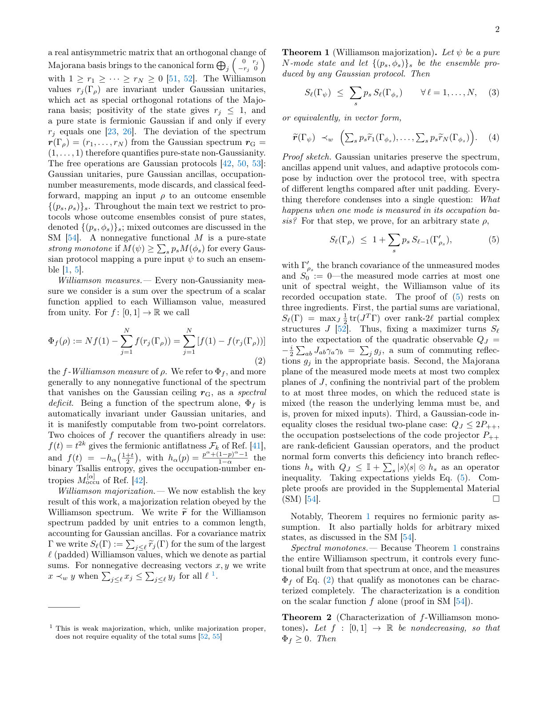
<figcaption class="paper-figure-caption"><b>Fig 1.</b> Low-resolution page preview, page 2</figcaption>
</figure>
<figure class="paper-figure-card">
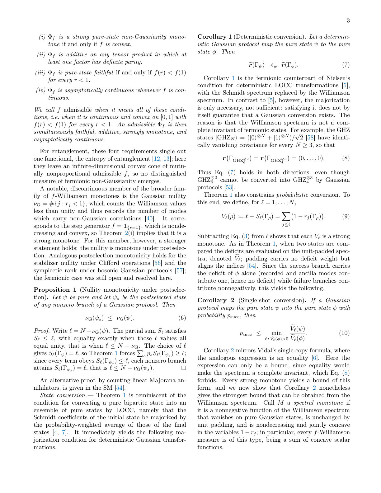
<figcaption class="paper-figure-caption"><b>Fig 2.</b> Low-resolution page preview, page 3</figcaption>
</figure>
<figure class="paper-figure-card">
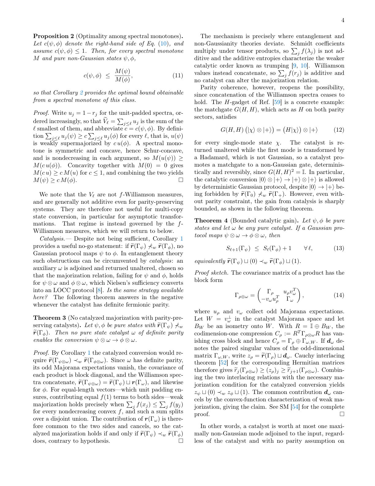
<figcaption class="paper-figure-caption"><b>Fig 3.</b> Low-resolution page preview, page 4</figcaption>
</figure>
<figure class="paper-figure-card">
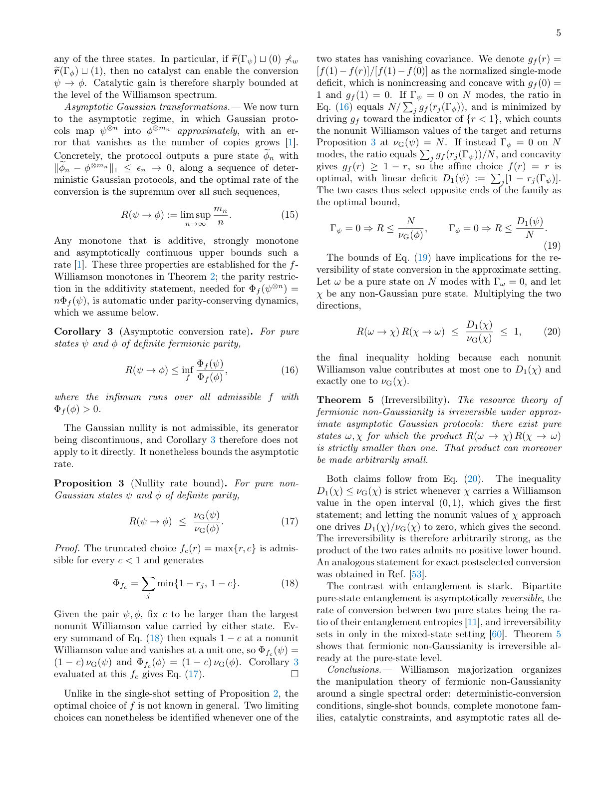
<figcaption class="paper-figure-caption"><b>Fig 4.</b> Low-resolution page preview, page 5</figcaption>
</figure>
<figure class="paper-figure-card">
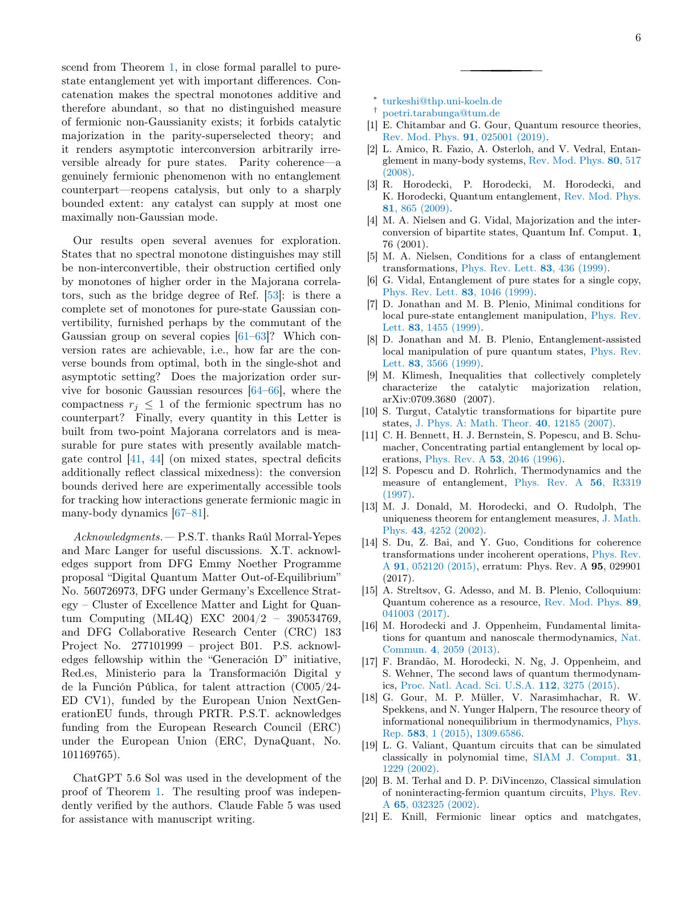
<figcaption class="paper-figure-caption"><b>Fig 5.</b> Low-resolution page preview, page 6</figcaption>
</figure>
</div>

<p><strong>Summary.</strong> This paper develops the Williamson majorization theory for fermionic non-Gaussianity, creating a resource measure analogous to entanglement measures in quantum information. It establishes that this spectral law governs state conversion under Gaussian protocols, providing strong monotonicity theorems and deriving irreversible bounds on how much non-Gaussian correlation can be converted between states.</p>
<p><strong>Why it may be interesting.</strong> This work provides a powerful, quantifiable resource theory framework for fermionic quantum computation that directly links spectral properties (Williamson spectrum) to fundamental physical processes like state transformation and irreversible dynamics. The connection between entanglement monotones and non-Gaussianity is highly relevant.</p>
<details>
<summary>Detailed structure</summary>
<p><strong>Main problem.</strong> The paper establishes a majorization law for fermionic non-Gaussianity, drawing an analogy to how majorization governs entanglement under local operations.</p>
<p><strong>Main result.</strong> It proves that the Williamson spectrum obeys a fundamental majorization law, turning convex deficits into strong monotones and establishing irreversible conversion bounds for pure states.</p>
<p><strong>Method.</strong> The analysis uses spectral theory applied to Majorana covariance matrices, defining non-Gaussianity via the deviation of the Williamson spectrum from its Gaussian limit.</p>
<p><strong>Model / system.</strong> The system is fermionic, described by $N$ Majorana operators. The diagnostics rely on the covariance matrix $\Gamma_
ho$, which characterizes the state's correlations.</p>
<p><strong>Key observables.</strong> Williamson Spectrum ($r_j$), Fermionic Non-Gaussianity ($\Phi_f$), Gaussian Nullity ($
u_G$), and conversion rates $R(\psi 	o \phi)$.</p>
<p><strong>Important parameters / regimes.</strong> The function $f$ defining the monotone must be convex on $[0, 1]$ and satisfy $f(r) < f(1)$ for $r < 1$. Parity conservation is a key constraint.</p>
<p><strong>Assumptions / limitations.</strong> The theory primarily analyzes Gaussian protocols with pure state outcomes; rate bounds rely on asymptotic limits ($\epsilon_n 	o 0$) and definite fermionic parity.</p>
<p><strong>Paper structure.</strong> The paper builds from establishing the Williamson majorization law for pure states (analogous to entanglement) to characterizing non-Gaussianity monotones via convex functions $f$. It then extends this to single-shot and asymptotic conversion rates, proving irreversibility when parity is conserved.</p>
</details>
<details>
<summary>Abstract</summary>
<p>Pure-state entanglement rests on a single algebraic backbone: majorization of the Schmidt spectrum governs state conversion under local operations and classical communication, and constrains entanglement monotones. Here we establish a corresponding majorization law for fermionic non-Gaussianity, the resource that elevates free fermions to universal quantum computation. Under any fermionic Gaussian protocol with pure state outcomes, the Williamson spectrum of a pure state's Majorana covariance matrix is weakly majorized by its ensemble average. This spectral law mirrors that of entanglement theory. It turns computable non-Gaussianity quantifiers such as fermionic antiflatness and occupation entropies into strong monotones for fermionic non-Gaussianity, and delivers necessary conditions and converse bounds on state conversion under Gaussian protocols. When fermion parity is conserved, no catalyst can remove a majorization obstruction---unless it carries parity coherence---and asymptotic interconversion is irreversible already for pure states. All relevant quantities are accessible from two-point Majorana correlators, turning the theory developed here into experimentally observable properties of quantum matter, testable on present-day quantum devices.</p>
</details>
<p><sub><a href="#top">↑ back to top</a></sub></p>

<p><a id="paper-2608.10917"></a></p>
<h3 id="quantum-signatures-of-two-electron-hbt-interference-in-free-space"><a href="http://arxiv.org/abs/2608.10917v1">Quantum Signatures of Two-Electron HBT Interference in Free Space</a></h3>
<p><strong>Authors:</strong> Florian Fleischmann, Mona Bukenberger, Anton Classen, Marc-Oliver Pleinert, Joachim von Zanthier<br>
<strong>Type:</strong> theory · <strong>Category:</strong> other · <strong>PDF:</strong> <a href="https://arxiv.org/pdf/2608.10917v1">https://arxiv.org/pdf/2608.10917v1</a><br>
<strong>Analysis basis:</strong> full PDF text, analyzed in chunks
<strong>Topic relevance:</strong> <code>interference shaping light</code> <strong>3/5</strong> · <code>quantum measurements</code> <strong>1/5</strong> · <code>quantum optics experiment</code> <strong>1/5</strong></p>
<div class="figure-strip-hint">↔ Scroll figures horizontally</div>
<div class="paper-figures-scroll">
<figure class="paper-figure-card">
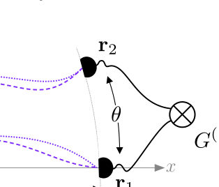
<figcaption class="paper-figure-caption"><b>Fig 1.</b> Figure 1. Setup of detecting the spatio-temporal correlations of two electrons emitted by two needle tips at rS1 and rS2 with inter-slit distance r0. The needle tips emit single electrons, which - after initial acceleration by a bias voltage (not shown) - propagate freely where the state of the two electrons is described by the two-particle wave function Ψ(r′ 1, r′ 2, t′). In the far field at x ≈D, the electrons are registered by two detectors at r1 and r2 with relative angle θ, allowing to obtain the second-order correlation function G(2)(r1, r2, t) ∝|Ψ(r1, r2, t)|2.</figcaption>
</figure>
<figure class="paper-figure-card">
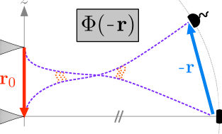
<figcaption class="paper-figure-caption"><b>Fig 2.</b> Figure 2. Illustration of the quantum paths corresponding to Φ(r) and Φ(−r). In both figures, r0 corresponds to the initial separation of the two electrons emitted at the two needle tips. The dashed violet lines represents the two possible two-electron paths, and the orange dotted lines illustrate the Coulomb interaction. (a) Φ(r) corresponds to the parallel path in the quantum path picture, where the electron from the upper (lower) needle tip is registered at the upper (lower) detector. (b) Φ(−r) corresponds to the diagonal path, where the electron from the upper (lower) needle tip is registered at the lower (upper) detector; here, the electrons have to ‘cross’ each other.</figcaption>
</figure>
<figure class="paper-figure-card">
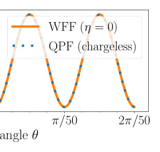
<figcaption class="paper-figure-caption"><b>Fig 3.</b> Figure 3. Comparison of the second-order correlation function G(2) for κ = 1 × 1011 m−1 and r0 = 1 nm, obtained in the noninteracting regime η = 0 via the numerically evaluated wavefunction formalism (WFF) (orange solid line) and via the analytical quantum path formalism (QPF) of [31] (blue dotted line). Both approaches yield the same spatial interference pattern demonstrating that the result derived via QPF is recovered by the WFF approach in the noninteracting limit.</figcaption>
</figure>
<figure class="paper-figure-card">
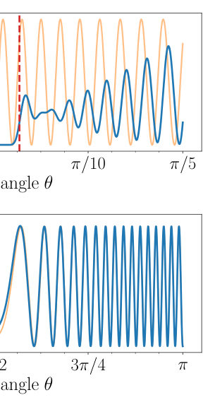
<figcaption class="paper-figure-caption"><b>Fig 4.</b> Figure 4. Spatial interference pattern G(2) for two electrons with parallel spin (S = 1, MS = 1), with Coulomb interaction (blue) and for reference without Coulomb interaction (orange). (a) The interference pattern for small relative angles θ displays a strong Coulomb suppression; here, the vertical red dashed line corresponds to the classical estimation of the Coulomb dip derived in [31]. (b) Interference pattern from θ = 0 to θ = π. At θ = 0, the electrons travel in the same direction with strong Coulomb suppression as shown in (a); at θ = π, in contrast, the electrons travel in opposite directions, where Coulomb interaction becomes negligible. Note that the frequency change around π/2 is...</figcaption>
</figure>
<figure class="paper-figure-card">
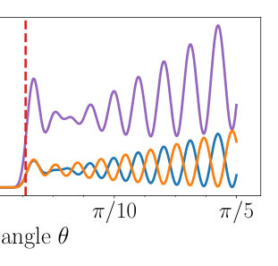
<figcaption class="paper-figure-caption"><b>Fig 5.</b> Figure 5. Comparison between the spatial interference patterns G(2) for two electrons with parallel spins, i.e., S = 1, MS = 1 (blue solid line), two electrons with antiparallel spins, i.e., S = 0, MS = 0, mimicking ’bosonic’ electrons (orange solid line), and two electrons with unpolarized spins (purple solid line). The vertical red dashed line corresponds to the classical estimation of the Coulomb dip as discussed in [31].</figcaption>
</figure>
</div>

<p><strong>Summary.</strong> This paper develops a full quantum-mechanical theory for two-electron Hanbury Brown-Twiss interference. It calculates the correlation function by treating both fermionic exchange statistics and Coulomb repulsion simultaneously. The results establish clear, measurable signatures that allow experimentalists to disentangle these two fundamental quantum effects.</p>
<p><strong>Why it may be interesting.</strong> This work provides a rigorous theoretical tool to distinguish between purely quantum mechanical effects (like fermionic antibunching) and classical/semiclassical interactions (like Coulomb repulsion) in mesoscopic interference experiments.</p>
<details>
<summary>Detailed structure</summary>
<p><strong>Main problem.</strong> The study aims to identify genuine quantum signatures arising from the interplay between fermionic exchange symmetry and Coulomb repulsion in two-electron interference experiments.</p>
<p><strong>Main result.</strong> The theory predicts characteristic features, including a pronounced Coulomb-dominated suppression region and phase offsets, which are absent in semiclassical descriptions. The spatial oscillation frequency outside this region is governed by fermionic exchange symmetry.</p>
<p><strong>Method.</strong> The analysis employs a fully quantum-mechanical framework, calculating the second-order spatial correlation function using both wavefunction and field operator approaches.</p>
<p><strong>Model / system.</strong> The system models two electrons emitted from two independent needle-tip emitters in free space, treated as a two-body scattering problem governed by a Hamiltonian including kinetic energy and Coulomb interaction. The wave function is separated into center-of-mass and relative coordinates.</p>
<p><strong>Key observables.</strong> The second-order spatial correlation function, G^(2)(r1, r2), which measures the probability of detecting two electrons at specific positions.</p>
<p><strong>Important parameters / regimes.</strong> Tip separation ($r_0$), detector distance ($D$), electron energy ($\kappa$ or $k$), and bias voltage ($U_{	ext{bias}}$).</p>
<p><strong>Assumptions / limitations.</strong> The model assumes point-like sources, monochromatic emission, and instantaneous acceleration to the detectors in the far field.</p>
<p><strong>Figures summary.</strong> Figure 1 illustrates the experimental setup with two needle tips. Figure 2 depicts the quantum paths corresponding to parallel and crossed paths for the relative wavefunction.</p>
<p><strong>Paper structure.</strong> The paper develops the theory by first establishing the general framework using a fully quantum-mechanical description, then deriving the correlation function via both wavefunction and field operator methods, and finally analyzing the distinct signatures arising from Coulomb interaction versus exchange symmetry.</p>
</details>
<details>
<summary>Abstract</summary>
<p>Understanding how fermionic exchange and Coulomb repulsion jointly shape two-electron correlations is essential for identifying genuine quantum signatures in multi-electron interference experiments. To address this interplay, we investigate Hanbury Brown and Twiss interference of two electrons generated by two independent needle-tip emitters within a full quantum-mechanical framework. In the absence of Coulomb interaction, the approach reproduces the results previously obtained within a quantum path formalism. For Coulomb-interacting electrons, we predict characteristic features absent in a semiclassical description: a pronounced Coulomb-dominated suppression region as well as Coulomb-induced phase offsets and fringe shifts. At the same time, outside of the Coulomb-dominated region, the spatial oscillation frequency is essentially governed by fermionic exchange symmetry. Our results establish quantitative parameter regimes for disentangling Coulomb interaction from fermionic exchange symmetry in such experiments.</p>
</details>
<p><sub><a href="#top">↑ back to top</a></sub></p>

<p><a id="paper-2608.10147"></a></p>
<h3 id="a-simple-algorithm-for-best-separable-state"><a href="http://arxiv.org/abs/2608.10147v1">A Simple Algorithm for Best Separable State</a></h3>
<p><strong>Authors:</strong> Prashanti Anderson, Samuel B. Hopkins, Amit Rajaraman<br>
<strong>Type:</strong> theory · <strong>Category:</strong> quantum information and computing · <strong>PDF:</strong> <a href="https://arxiv.org/pdf/2608.10147v1">https://arxiv.org/pdf/2608.10147v1</a><br>
<strong>Analysis basis:</strong> full PDF text, analyzed in chunks
<strong>Topic relevance:</strong> <code>quantum measurements</code> <strong>3/5</strong> · <code>Keldysh / 2PI / non-Gaussian methods</code> <strong>1/5</strong></p>
<div class="figure-strip-hint">↔ Scroll figures horizontally</div>
<div class="paper-figures-scroll">
<figure class="paper-figure-card">
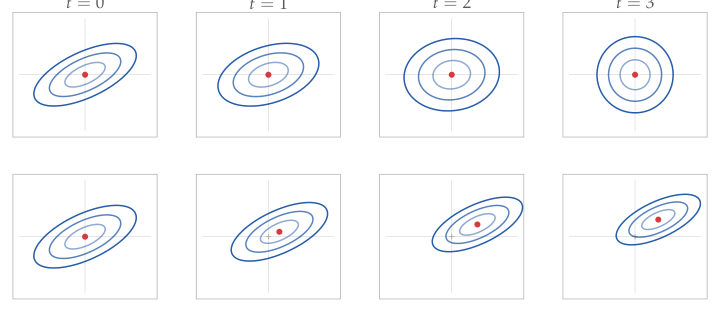
<figcaption class="paper-figure-caption"><b>Fig 1.</b> Figure 1: Two ways that ∥Cov ∥F can decrease as we condition on coordinates in a high- dimensional distribution. In the top row, correlations disappear while the conditional mean remains near the origin – the distribution becomes isotropic but retains significant variance. In the bottom row, the overall variance decreases while the mean moves away from the origin. Our fine-grained pinning lemma shows that the second behavior must happen for a noticeable fraction of conditional distributions.</figcaption>
</figure>
</div>

<p><strong>Summary.</strong> This paper presents a new, simpler algorithm to solve the Best Separable State (BSS) problem, which quantifies how well a quantum measurement can distinguish between entangled and separable states. By improving upon existing Sum-of-Squares relaxation techniques, the authors achieve significantly faster running times for finding near-optimal solutions in this fundamental problem of quantum resource theory.</p>
<p><strong>Why it may be interesting.</strong> The techniques developed—advanced algebraic methods like refined pinning lemmas and efficient polynomial optimization solvers—are highly relevant for analyzing resource constraints in quantum information protocols.</p>
<details>
<summary>Detailed structure</summary>
<p><strong>Main problem.</strong> The paper addresses the Best Separable State (BSS) problem, which seeks to find the maximum acceptance probability of a quantum measurement restricted to unentangled (separable) states.</p>
<p><strong>Main result.</strong> The authors develop an algorithm that significantly improves the time complexity for solving BSS in both the $\epsilon$-approximation regime ($1-\epsilon$) and the $q/n$ approximation regime, beating previous state-of-the-art bounds.</p>
<p><strong>Method.</strong> The core method involves generalizing global correlation rounding techniques applied to Sum-of-Squares (SoS) relaxations of polynomial optimization problems over the unit sphere.</p>
<p><strong>Model / system.</strong> The problem is formulated using a Hermitian matrix $M$ describing a quantum measurement device, studied in the context of finding optimal separable states $\langle x \otimes y, M(x \otimes y) 
angle$.</p>
<p><strong>Key observables.</strong> BSS(M), approximation error ($\epsilon$), and the ratio $\|\Pi(x \otimes y)\|_2^2 / \|x \otimes y\|_2^2$.</p>
<p><strong>Important parameters / regimes.</strong> The dimension $n$, the desired accuracy $\epsilon$, and the parameter $q$ defining the target separation.</p>
<p><strong>Assumptions / limitations.</strong> The analysis is simplified by working over $\mathbb{R}$, though the result generalizes from a symmetric case to the non-symmetric one. The proof relies on proving a new variant of the 'pinning lemma'.</p>
<p><strong>Paper structure.</strong> The paper introduces BSS, relates it to polynomial optimization and SoS relaxations, develops an improved rounding technique based on global correlation rounding, proves a novel pinning lemma, and applies this machinery to achieve the final time complexity bounds for distinguishing between different values of BSS(M).</p>
</details>
<details>
<summary>Abstract</summary>
<p>We study the best separable state problem (BSS), which asks for the maximum acceptance probability of a quantum measurement over unentangled states. In classical terms, the goal is to maximize $\langle(x \otimes y), M (x \otimes y)\rangle$ over unit vectors $x,y$ where $0 \preceq M \preceq I$; we call this value $\mathrm{BSS}(M)$. We study $\mathrm{BSS}$ in the "perfect completeness" regime, where given $M$ such that $\mathrm{BSS}(M) = 1$ the goal is to find the best possible solution $x,y$ -- this generalizes the problem of finding a rank-one matrix as close as possible to a given subspace of $\mathbb{R}^{n \times n}$ guaranteed to contain a rank-one matrix. The strongest known algorithmic guarantees for this problem are: (1) an algorithm which finds a solution with value $1-\varepsilon$ in time $\exp(\sqrt{n} (\log n)^{O(1)} / \varepsilon^2)$, due to Barak, Kothari, and Steurer, and (2) an algorithm which finds a solution with value $q/n$ in time roughly $n^{O(q)}$, due to Bhattiprolu, Ghosh, Guruswami, Lee, and Tulsiani. We give a much simpler approach to rounding the SoS relaxation, generalizing the canonical "global correlation rounding" technique, and obtain a better running time. Given $M$ with $\mathrm{BSS}(M) = 1$, our algorithm finds a solution with value $1-ε$ in time $n^{O(\sqrt{n/\varepsilon})}$, and a solution of value $q/n$ in time $n^{O(\sqrt q)}$. Using the same techniques, we prove a new variant of the "pinning lemma", a measure-decomposition theorem widely used in LP/SDP rounding, high-dimensional probability, and statistical physics, which we believe is of independent interest.</p>
</details>
<p><sub><a href="#top">↑ back to top</a></sub></p>

<p><a id="paper-2608.10263"></a></p>
<h3 id="helimagnetism-from-competing-intra-and-interchain-interactions-in-crbrmath451math-and-crimath452math"><a href="http://arxiv.org/abs/2608.10263v1">Helimagnetism from competing intra- and interchain interactions in CrBr$_2$ and CrI$_2$</a></h3>
<p><strong>Authors:</strong> John A. Schneeloch, Matthew B. Stone, Zachary Morgan, Despina Louca<br>
<strong>Type:</strong> experiment · <strong>Category:</strong> other · <strong>PDF:</strong> <a href="https://arxiv.org/pdf/2608.10263v1">https://arxiv.org/pdf/2608.10263v1</a><br>
<strong>Analysis basis:</strong> full PDF text, analyzed in chunks
<strong>Topic relevance:</strong> <code>analog quantum simulation</code> <strong>3/5</strong> · <code>Frenkel-Kontorova</code> <strong>1/5</strong></p>
<div class="figure-strip-hint">↔ Scroll figures horizontally</div>
<div class="paper-figures-scroll">
<figure class="paper-figure-card">
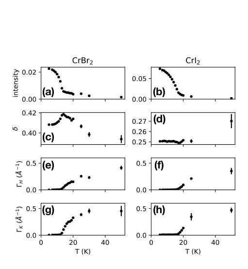
<figcaption class="paper-figure-caption"><b>Fig 1.</b> Figure 3. Parameters resulting from Voigt-function fits to intensity across the magnetic Bragg peaks (-0.41,-1,0) and (1.25,0,-1) for CrBr2 (a,c,e,g) and CrI2 (b,d,f,h), respectively. Data were obtained on SEQUOIA with Ei = 17 meV and integrated within 0.1 r.l.u. along the H or K directions and 0.2 r.l.u. along the L direction. The parameters resulted from fits along the H (a-f) or K (g,h) direction. These parameters include the integrated intensity (a,b), the position (c,d), and the Lorentzian FWHM (e-h). The Gaussian component of the Voigt functions was fixed to the low-temperature peak width of each compound’s data set, accounting for the instrumental resolution and crystal mosaic.</figcaption>
</figure>
<figure class="paper-figure-card">
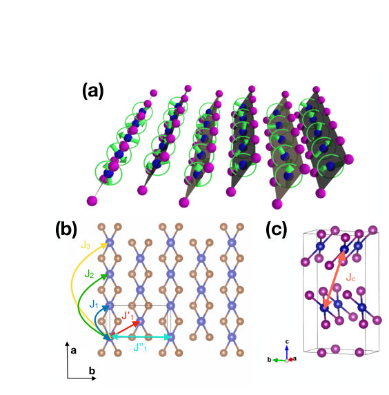
<figcaption class="paper-figure-caption"><b>Fig 2.</b> Figure 1. (a) A layer of CrBr2, with spins rotating perpendic- ular to the ribbon-chain axis. (b) Top-down view of a layer of CrBr2 with intralayer exchange bonds labeled. The ribbon chains run vertically. CrI2 is isostructural. (c) Orthorhom- bic CrI2, the crystal structure of the CrBr2 and CrI2 crystals measured in this study, with the interlayer Jc exchange bond labeled. Diagrams (b) and (c) made using VESTA [22].</figcaption>
</figure>
<figure class="paper-figure-card">
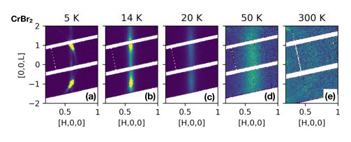
<figcaption class="paper-figure-caption"><b>Fig 3.</b> Figure 2. Elastic intensity within the H0L plane for CrBr2 at various temperatures. Data were acquired on SEQUOIA at Ei = 17 meV for (a-d) and Ei = 25 meV for (e) as described in Sec. A in the Supplemental Materials [26]. Intensity scales were the same for 6, 14, and 20 K, but adjusted to enhance visibility for 50 and 300 K.</figcaption>
</figure>
<figure class="paper-figure-card">
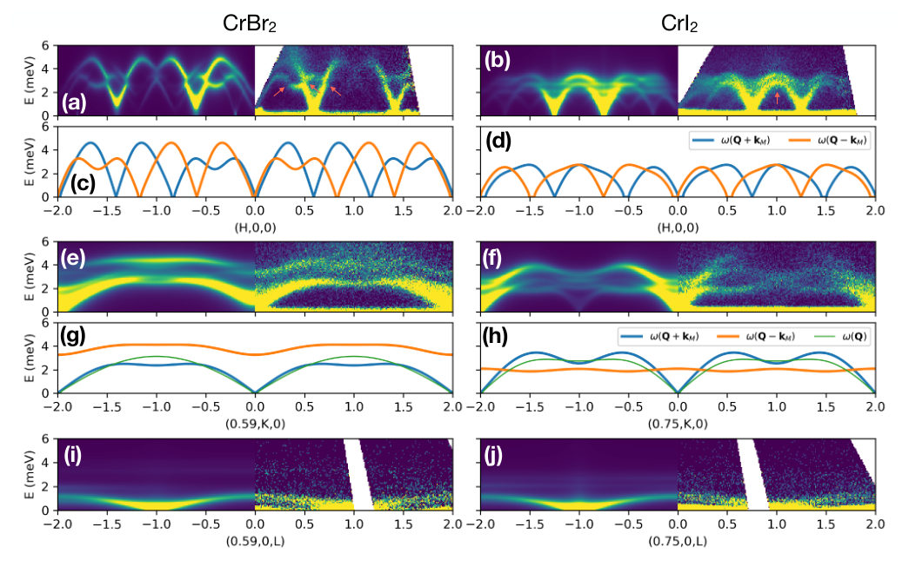
<figcaption class="paper-figure-caption"><b>Fig 4.</b> Figure 4. Spin wave intensity at 5 K for CrBr2 (a,e,g) and CrI2 (b,f,j), along with the dispersion for simplified single-layer spin-wave models that omit single-ion anisotropy and interlayer coupling. Data were taken on SEQUOIA. Intensity is plotted as a function of energy transfer E, and wavevector along the directions in reciprocal space shown on the horizontal axis, corresponding to the ribbon-chain axis (a,b), the perpendicular intralayer direction (e,f), or the interlayer direction (g,h). The left and right halves of (a,b,e,f,g,h) show, respectively, the calculated and experimental intensity. The arrows in (a) and (b) show avoided crossing points. The integration range was ±0.05 r.l.u....</figcaption>
</figure>
</div>

<p><strong>Summary.</strong> This work uses inelastic neutron scattering on $   ext{CrBr}_2$ and $  ext{CrI}_2$ to determine that their helimagnetic order stems from the competition between intrachain and interchain antiferromagnetic interactions. The study quantifies this by fitting spin wave data, finding that single-ion anisotropy modulates the helix, while also revealing evidence of structural disorder in the crystal stacking.</p>
<p><strong>Why it may be interesting.</strong> The detailed analysis of spin wave dispersions and the extraction of multiple competing exchange couplings provide a quantitative understanding of magnetic frustration in low-dimensional quantum magnets, which is highly relevant for designing novel quantum materials.</p>
<details>
<summary>Detailed structure</summary>
<p><strong>Main problem.</strong> The study aims to determine the unknown magnetic interactions responsible for the helimagnetic order observed in the layered compounds $  ext{CrBr}_2$ and $  ext{CrI}_2$, while also investigating how dimensionality affects this ordering.</p>
<p><strong>Main result.</strong> Helimagnetism primarily arises from the competition between nearest-neighbor antiferromagnetic exchange interactions within chains ($  ext{J}_1$) and between chains ($ ext{J}'_1$). Furthermore, single-ion anisotropy significantly modulates the helical spin structure.</p>
<p><strong>Method.</strong> The research heavily relies on inelastic neutron scattering (INS) measurements on single crystals to map out spin wave dispersions and extract magnetic exchange constants. Elastic neutron scattering is also used to probe structural disorder.</p>
<p><strong>Model / system.</strong> The physical system consists of van der Waals layered magnets, $    ext{CrBr}_2$ and $  ext{CrI}_2$, which exhibit quasi-2D magnetism. The analysis uses spin wave theory applied to Heisenberg Hamiltonians incorporating competing exchange couplings ($J_1, J'_1$) and single-ion anisotropy (SIA).</p>
<p><strong>Key observables.</strong> Spin wave dispersion ($\omega(Q)$), magnetic Bragg peak intensities, incommensurability ($\delta$), and the temperature dependence of spin correlations.</p>
<p><strong>Important parameters / regimes.</strong> The dominant exchange interactions are $    ext{J}_1$ and $ ext{J}'_1$; SIA values are significant (e.g., $-0.16 	ext{ meV}$ for $ ext{CrBr}_2$); interlayer coupling ($J_c$) is found to be weak.</p>
<p><strong>Assumptions / limitations.</strong> The analysis assumes that the observed magnetic behavior can be modeled by nearest-neighbor exchange interactions and incorporates corrections from single-ion anisotropy and higher-order harmonic terms in INS fitting.</p>
<p><strong>Figures summary.</strong> Figures illustrate lattice structures, elastic intensity measurements showing disordered stacking, and INS data revealing spin wave dispersions with avoided crossings attributed to SIA and $3k_M$ harmonics.</p>
<p><strong>Paper structure.</strong> The paper progresses by first establishing the magnetic order via INS, then fitting exchange parameters using simplified models ($J_1-J'_1$), refining the model by incorporating SIA effects visible in avoided crossings, and finally analyzing structural disorder and higher-order harmonic peaks to constrain the full Hamiltonian.</p>
</details>
<details>
<summary>Abstract</summary>
<p>CrBr$_2$ and CrI$_2$ are promising platforms for studying the effect of dimensionality on magnetic order, having been isolated in a 3-, 2-, and 1-dimensional form as bulk crystals, monolayers, and individual chains encapsulated in carbon nanotubes. However, the interactions that give rise to their helimagnetic order are unknown. Via inelastic neutron scattering on single crystals, we have determined the exchange interactions of these compounds from the spin wave dispersions, finding that the helimagnetic order arises primarily from competing antiferromagnetic interactions between intrachain and interchain nearest-neighbors. Single-ion anisotropy is substantial, modulating the helical spin rotation and gapping the inelastic intensity at points of branch crossings. As temperature increases, long-range order vanishes but intralayer correlations remain detectable up to at least 50 K.</p>
</details>
<p><sub><a href="#top">↑ back to top</a></sub></p>

<p><a id="paper-2608.10490"></a></p>
<h3 id="simultaneous-heisenberg-limited-multiparameter-metrology-via-indefinite-evolution"><a href="http://arxiv.org/abs/2608.10490v1">Simultaneous Heisenberg-Limited Multiparameter Metrology via Indefinite Evolution</a></h3>
<p><strong>Authors:</strong> Hang Xu, Tailong Xiao, Ze Zheng, Xiaoyang Deng, Jinfeng Zheng, Jingzheng Huang, Guihua Zeng<br>
<strong>Type:</strong> theory · <strong>Category:</strong> quantum information and computing · <strong>PDF:</strong> <a href="https://arxiv.org/pdf/2608.10490v1">https://arxiv.org/pdf/2608.10490v1</a><br>
<strong>Analysis basis:</strong> full PDF text, analyzed in chunks
<strong>Topic relevance:</strong> <code>quantum measurements</code> <strong>3/5</strong> · <code>interference shaping light</code> <strong>1/5</strong></p>
<div class="figure-strip-hint">↔ Scroll figures horizontally</div>
<div class="paper-figures-scroll">
<figure class="paper-figure-card">
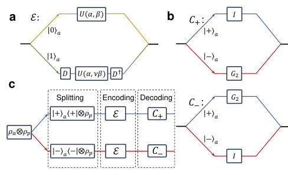
<figcaption class="paper-figure-caption"><b>Fig 1.</b> FIG. 1. Indefinite-evolution (IE) sensing protocol. (a) En- coding block E. (b) Conditional compensation blocks C± in the |±⟩a basis. (c) Full IE time-slice protocol, composed of splitting, encoding, and history-dependent decoding.</figcaption>
</figure>
<figure class="paper-figure-card">
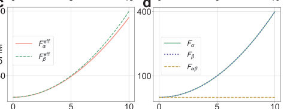
<figcaption class="paper-figure-caption"><b>Fig 2.</b> FIG. 2. Results of the noiseless qubit probe. (a,b) Estima- tion precision for α and β in the orthogonal case. (c) IE for the non-parallel case with θ = π/4. (d) IE for the parallel case.</figcaption>
</figure>
<figure class="paper-figure-card">
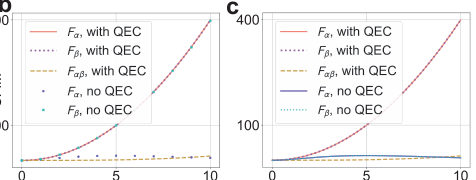
<figcaption class="paper-figure-caption"><b>Fig 3.</b> FIG. 3. (a) Schematic of the noisy IE protocol. The evolu- tion channel of the probe in encoding phase is controlled by the computational basis of the auxiliary qubits. Results of the noisy qubit probe by IE protocol for single X-noise (b), X- and Z-noises case (c).</figcaption>
</figure>
<figure class="paper-figure-card">
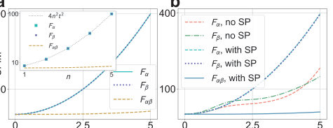
<figcaption class="paper-figure-caption"><b>Fig 4.</b> FIG. 4. (a) Multi-qubit probe for n = 2; the inset shows the qubit-number n scaling at t = 1. (b) High-dimensional probe with and without SP.</figcaption>
</figure>
</div>

<p><strong>Summary.</strong> This paper addresses the fundamental challenge of performing high-precision measurements involving multiple unknown parameters simultaneously. By introducing the concept of Indefinite Evolution (IE), the authors demonstrate a novel resource that allows quantum systems to overcome inherent encoding and measurement incompatibilities. This breakthrough opens a pathway toward realizing true Heisenberg-limited sensing in complex, multi-parameter physical platforms.</p>
<p><strong>Why it may be interesting.</strong> This work provides a concrete theoretical mechanism (IE) for achieving optimal sensing bounds in complex multi-parameter settings, which is highly relevant for designing next-generation quantum sensors based on interferometry or atomic clocks.</p>
<details>
<summary>Detailed structure</summary>
<p><strong>Main problem.</strong> Extending quantum metrology precision from single-parameter estimation (Heisenberg limit) to multiparameter estimation is fundamentally constrained by parameter-encoding and measurement incompatibility.</p>
<p><strong>Main result.</strong> The introduction of Indefinite Evolution (IE) overcomes these incompatibilities, enabling the simultaneous achievement of Heisenberg-limited scaling for multiple parameters in quantum sensing.</p>
<p><strong>Method.</strong> The authors propose a framework utilizing IE, where control operations are placed in a coherent superposition to allow compatible parameter encoding and optimal measurement strategies.</p>
<p><strong>Model / system.</strong> The model involves quantum probing using unitary evolution $U_h = e^{-iH(h)t}$ with unknown parameters $h=(h_1, \dots, h_n)$ encoded by noncommuting generators. The analysis is generalized to noisy, many-body, and high-dimensional probes.</p>
<p><strong>Key observables.</strong> Quantum Fisher Information Matrix (QFIM), Classical Fisher Information Matrix (CFIM), Simultaneous Heisenberg Limit (SHL) scaling ($F \propto t^2$).</p>
<p><strong>Important parameters / regimes.</strong> The relationship between signal generators (orthogonal vs. parallel); the presence or absence of Signal Reversal (SR).</p>
<p><strong>Assumptions / limitations.</strong> The core assumption is that IE acts as an operational resource capable of circumventing fundamental limitations imposed by definite evolution protocols.</p>
<p><strong>Figures summary.</strong> Figure 2 compares precision estimates for different strategies (FE, QEC, IE) showing IE achieves SHL where others fail; other figures illustrate the general protocol structure and scaling in multi-qubit/high-dimensional settings.</p>
<p><strong>Paper structure.</strong> The paper first establishes the limitations of standard metrology protocols due to encoding/measurement incompatibility. It then introduces and details the IE framework, demonstrating its success across various generator types (orthogonal, non-parallel, parallel) and generalizing the results to noisy and high-dimensional systems.</p>
</details>
<details>
<summary>Abstract</summary>
<p>Quantum metrology achieves Heisenberg-limited precision in single-parameter estimation, but its multiparameter extension is fundamentally constrained by both parameter-encoding and measurement incompatibility. Noncommuting signal generators may cause incompatible parameter-encoding, preventing the quantum Fisher information matrix from simultaneously achieving the Heisenberg scale for all parameters. Due to incompatible optimal measurements, the classical Fisher information matrix represents the practical attainable precision. Here, we introduce a multiparameter metrology framework based on indefinite evolution (IE), in which different control operations and signal reversal are placed in a coherent superposition. For a single-qubit probe with mutually orthogonal signal generators, IE enables compatible parameter encoding and optimal measurement without the signal reversal. For parallel generators, where only signal reversal realized by its generator is available, IE can achieve the same performance. We further extend this mechanism to noisy, many-body, and high-dimensional probes, and establish general conditions for achieving the simultaneous Heisenberg-limit. In contrast, definite evolution cannot achieve the same performance under compatible optimal measurements, even when signal reversal is available. Our results identify IE as an operational resource for overcoming multiparameter incompatibility and open a route toward attainable Heisenberg-limited sensing in interferometric platforms.</p>
</details>
<p><sub><a href="#top">↑ back to top</a></sub></p>

<p><a id="paper-2608.11173"></a></p>
<h3 id="a-quantum-roadmap-for-softmax-attention-exact-born-rule-analogs-for-softmax-attention-on-the-probability-simplex"><a href="http://arxiv.org/abs/2608.11173v1">A Quantum Roadmap for Softmax Attention: Exact Born-Rule Analogs for Softmax Attention on the Probability Simplex</a></h3>
<p><strong>Authors:</strong> Eric A. F. Reinhardt, Adam J. Hauser<br>
<strong>Type:</strong> theory · <strong>Category:</strong> quantum information and computing · <strong>PDF:</strong> <a href="https://arxiv.org/pdf/2608.11173v1">https://arxiv.org/pdf/2608.11173v1</a><br>
<strong>Analysis basis:</strong> full PDF text, analyzed in chunks
<strong>Topic relevance:</strong> <code>quantum measurements</code> <strong>3/5</strong></p>
<div class="figure-strip-hint">↔ Scroll figures horizontally</div>
<div class="paper-figures-scroll">
<figure class="paper-figure-card">
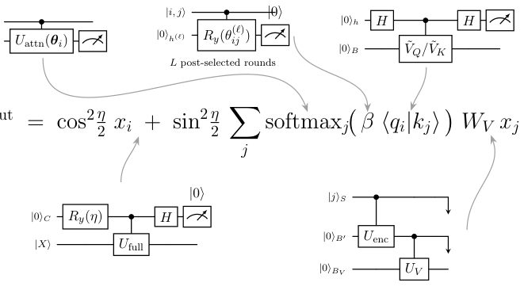
<figcaption class="paper-figure-caption"><b>Fig 1.</b> Figure 1: The dictionary at a glance: the gated single-head attention layer on the probability simplex, annotated with the circuit realizing each component (qi ∝WQ√xi, kj ∝WK√xj; at η = π/2, β = 1 the formula reduces to Eq. 1 under the conventions of Remark 2). Softmax: compiled cos2 Born readout with θij = 2 arccos  ezij/2 (Proposition 12); temperature: L post-selected rounds (Corollary 17); scores: Hadamard test (Lemma 9); gating and residual: single-ancilla preparation angle (Theorem 24); values: column-loading channel (Theorem 23).</figcaption>
</figure>
<figure class="paper-figure-card">
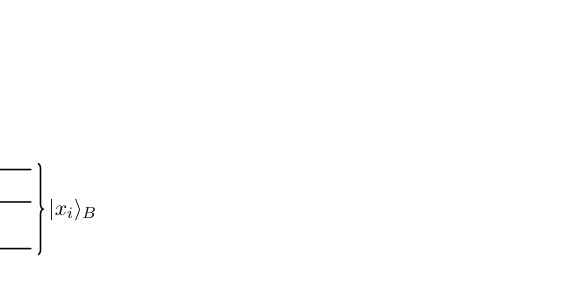
<figcaption class="paper-figure-caption"><b>Fig 2.</b> Figure 2: Born-rule encoding diagram.</figcaption>
</figure>
<figure class="paper-figure-card">
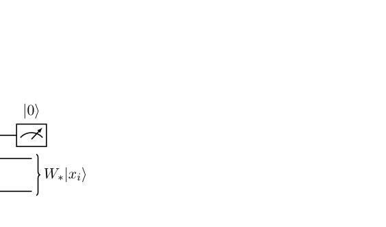
<figcaption class="paper-figure-caption"><b>Fig 3.</b> Figure 3: Q, K projection diagram.</figcaption>
</figure>
<figure class="paper-figure-card">
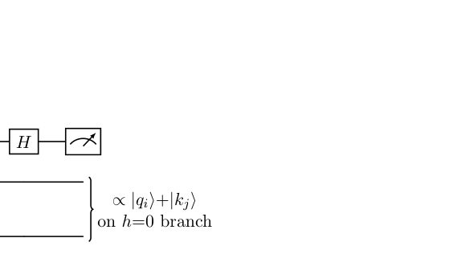
<figcaption class="paper-figure-caption"><b>Fig 4.</b> Figure 4: Hadamard-/swap-test diagram.</figcaption>
</figure>
<figure class="paper-figure-card">
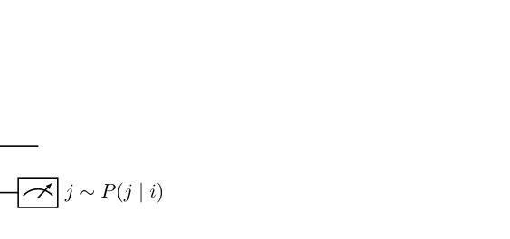
<figcaption class="paper-figure-caption"><b>Fig 5.</b> Figure 5: Quantum attention diagram.</figcaption>
</figure>
</div>

<p><strong>Summary.</strong> This paper constructs a detailed quantum circuit realization for the attention mechanism used in Transformers, specifically when inputs are probability distributions. It shows that core components like softmax and temperature can be mapped exactly to sequences of quantum measurements and rotations. This work bridges advanced deep learning architectures with fundamental principles of quantum information processing.</p>
<p><strong>Why it may be interesting.</strong> While focused on AI, the rigorous mapping of continuous mathematical functions (like softmax) to discrete quantum operations (Born measurements, rotations) provides deep insights into how complex classical computations can be fundamentally constrained or realized within quantum information theory.</p>
<details>
<summary>Detailed structure</summary>
<p><strong>Main problem.</strong> The paper aims to develop an exact, component-by-component quantum realization for the softmax attention mechanism, particularly when inputs are constrained to the probability simplex.</p>
<p><strong>Main result.</strong> It establishes that softmax attention admits such a quantum analog in the infinite-shot limit, mapping classical components like temperature and residual connections to specific quantum gates and measurement protocols.</p>
<p><strong>Method.</strong> The realization uses quantum primitives including amplitude encoding, block-encoded projections, Hadamard tests for inner products, and controlled rotations ($ ext{c}R_y$) within a circuit framework.</p>
<p><strong>Model / system.</strong> The model is the single-head gated transformer attention layer operating on inputs restricted to the probability simplex. The computation is mapped onto a quantum circuit utilizing qubits and unitary transformations.</p>
<p><strong>Key observables.</strong> Attention scores, which are realized as Hadamard-test statistics on block-encoded projections of amplitude-encoded inputs.</p>
<p><strong>Important parameters / regimes.</strong> The softmax temperature ($eta$) is physically realized by the number ($L$) of post-selected measurement rounds; learnable parameters correspond to rotation-gate angles.</p>
<p><strong>Assumptions / limitations.</strong> The equivalence is exact only in the infinite-shot limit. The construction assumes inputs are row-normalized probability distributions (the probability simplex domain).</p>
<p><strong>Figures summary.</strong> Figure 1 provides a 'dictionary at a glance' mapping classical components to quantum circuits; Figure 2 illustrates Born-rule encoding, and Figure 3 shows Q/K projection using block encoding.</p>
<p><strong>Paper structure.</strong> The paper builds an equivalence dictionary by realizing core attention components (scores, softmax, temperature, residual) sequentially. It details the necessary quantum primitives for each classical function, culminating in a full layer equivalence theorem machine-checked in Lean 4.</p>
</details>
<details>
<summary>Abstract</summary>
<p>The attention mechanism forms the foundation of many modern AI models such as the Transformer. In one subclass of problems where attention is used, inputs and outputs are bound to the probability simplex so that all outputs sum to one. In this setting, softmax attention admits an exact, component-by-component quantum realization. Attention scores are Hadamard-test statistics on block-encoded projections of amplitude-encoded inputs. The exponential softmax is the interior of a cosine-squared family generated by Born-rule measurement under an exact bijection, whose boundary expresses sparse attention with exact zeros at finite parameter values. The softmax temperature is a repetition count where post-selected measurement rounds realize discretized inverse temperature exactly. Value aggregation is a deterministic column-loading channel that dilates the column-stochastic value matrix. The gated residual is the preparation angle of a single ancilla, with the additive identity at a mixing angle of π/2. Every learnable parameter is a rotation-gate angle. The composed layer is exact in the infinite-shot limit with one measure-and-reload step per attention score; a fully-coherent variant is ε-approximate via quantum singular value transformation in the infinite depth limit. The algebraic core is machine-checked in Lean 4.</p>
</details>
<p><sub><a href="#top">↑ back to top</a></sub></p>

<p><a id="paper-2608.11122"></a></p>
<h3 id="robust-chsh-self-testing-with-finite-energy-gkp-states"><a href="http://arxiv.org/abs/2608.11122v1">Robust CHSH Self-Testing with Finite-Energy GKP States</a></h3>
<p><strong>Authors:</strong> Farzin Salek, Masahito Hayashi<br>
<strong>Type:</strong> theory · <strong>Category:</strong> quantum information and computing · <strong>PDF:</strong> <a href="https://arxiv.org/pdf/2608.11122v1">https://arxiv.org/pdf/2608.11122v1</a><br>
<strong>Analysis basis:</strong> full PDF text, analyzed in chunks
<strong>Topic relevance:</strong> <code>quantum measurements</code> <strong>3/5</strong></p>
<div class="figure-strip-hint">↔ Scroll figures horizontally</div>
<div class="paper-figures-scroll">
<figure class="paper-figure-card">
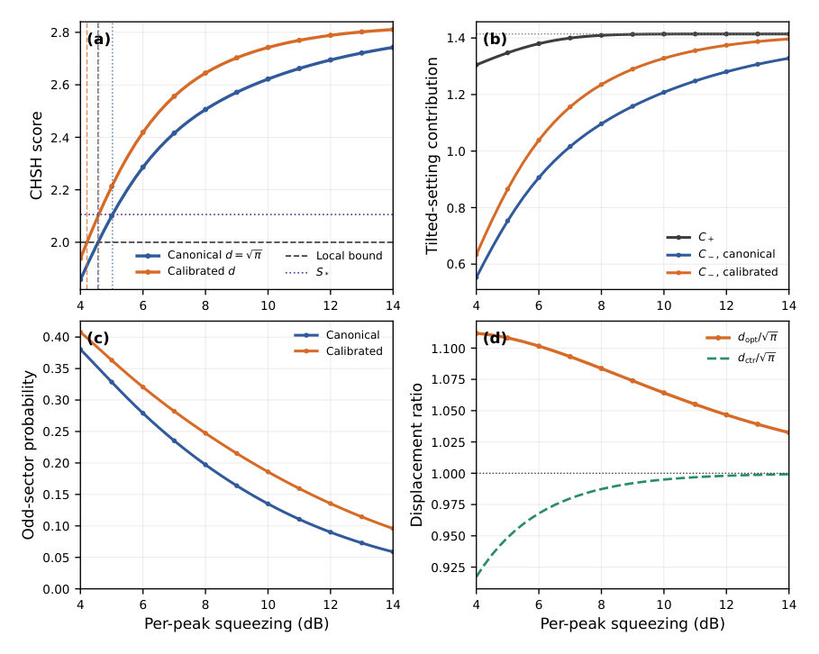
<figcaption class="paper-figure-caption"><b>Fig 1.</b> Figure 1: Finite-energy performance of the canonical and calibrated prescriptions. (a) CHSH scores, with the local bound and the threshold S∗, above which the affine branch of the Kaniewski bound exceeds 1/2, marked. Vertical lines mark the corresponding fixed and calibrated crossings of the local and S∗thresholds. (b) The two tilted-setting contributions. (c) Odd-sector probabilities after the displacement and before binary coarse-graining. (d) The calibrated displacement and dctr, which is shown only as a contracted-lattice diagnostic and is not used in the optimization. Points are computed at 0.25-dB intervals; connecting lines are guides to the eye. Calibration varies only d and keeps...</figcaption>
</figure>
</div>

<p><strong>Summary.</strong> This paper develops a theoretical framework to enhance Bell-pair self-testing using finite-energy GKP states. By incorporating measurements based on the photon number modulo four, the authors demonstrate that the achievable CHSH violation and extractability bounds exceed previous limits. This work is significant for quantum optics as it provides a pathway toward device-independent verification of entanglement in realistic physical systems.</p>
<p><strong>Why it may be interesting.</strong> It provides a concrete, resource-efficient method for achieving device-independent quantum guarantees (Bell testing) in continuous variable systems by engineering measurement bases using discrete information (photon number modulo 4).</p>
<details>
<summary>Detailed structure</summary>
<p><strong>Main problem.</strong> The research aims to establish robust self-testing protocols for Bell pairs using finite-energy Gaussian states (GKP) in continuous variable systems.</p>
<p><strong>Main result.</strong> The analysis provides quantitative thresholds showing that the CHSH value and extractability bound can be significantly improved by incorporating deterministic phase-bit coarse-graining derived from modular photon-number information.</p>
<p><strong>Method.</strong> The authors employ a full-oscillator analysis, combining measurements on position/momentum with fixed binary coarse-grainings of photon number modulo four to calculate physical correlations without logical post-corrections.</p>
<p><strong>Model / system.</strong> The system is based on bosonic modes encoded using the Gottesman–Kitaev–Preskill (GKP) code. The analysis focuses on finite-energy filtered versions of these states, allowing for measurements that utilize modular photon-number information.</p>
<p><strong>Key observables.</strong> CHSH value ($S$), extractability bound ($\Xi(
ho 	o |\psi_B
angle)$), and model thresholds (e.g., 4.56 dB).</p>
<p><strong>Important parameters / regimes.</strong> The canonical displacement amplitude $d$, the filter parameter $eta$, and the finite-energy cutoff/approximation level ($n$).</p>
<p><strong>Assumptions / limitations.</strong> The results are 'honest-model predictions' that do not account for experimental imperfections like loss or detection efficiency, though a device-independent guarantee is discussed.</p>
<p><strong>Paper structure.</strong> The paper develops the theoretical framework by analyzing the extractability bound using finite-rank projections and then applies this to the GKP state structure, showing how modular photon-number measurements enhance the self-testing capability beyond standard Pauli settings.</p>
</details>
<details>
<summary>Abstract</summary>
<p>We present a full-oscillator analysis of a finite-energy GKP CHSH test whose observed score yields robust Bell-pair self-testing. Periodically binned position and momentum give the Pauli settings, while a fixed binary coarse-graining of photon number modulo four and its displaced conjugate realize the tilted settings. For a number-filtered GKP source, we retain the finite codeword overlap, define the measurements on all photon-number sectors, and compute the physical correlations without logical post-corrections. With the canonical ideal-logical displacement \(d=\sqrtπ\), the CHSH value exceeds the local bound above \(4.56\) dB of per-peak squeezing, and Kaniewski's extractability bound becomes nontrivial above \(5.02\) dB. Calibrating only \(d\) using an independently characterized finite-energy parameter lowers these model thresholds to \(4.21\) dB and \(4.58\) dB, respectively; at \(12\) dB, it raises the score from \(2.69486\) to \(2.78858\) and the corresponding target-state overlap bound from \(0.90758\) to \(0.97243\). This calibration is fixed before Bell-test data are collected. The displacement activates the odd modulo-four sectors, so their fixed a priori assignments are a genuine finite-energy component. The large gain is specific to the deterministic phase-bit coarse-graining; independently calibrating the one-bit POVM with randomized odd-sector outcomes gives only a much smaller improvement. These are honest-model predictions, not loss, detection-efficiency, or finite-sample thresholds. In an experiment, a device-independent guarantee for an extracted Bell pair follows by inserting a confidence lower bound on the observed CHSH score into the self-testing theorem.</p>
</details>
<p><sub><a href="#top">↑ back to top</a></sub></p>

<p><a id="paper-2608.10160"></a></p>
<h3 id="was-schrodinger-ever-a-determinist"><a href="http://arxiv.org/abs/2608.10160v1">Was Schrödinger ever a determinist?</a></h3>
<p><strong>Authors:</strong> Flavio Del Santo, Nicolas Gisin<br>
<strong>Type:</strong> theory · <strong>Category:</strong> other · <strong>PDF:</strong> <a href="https://arxiv.org/pdf/2608.10160v1">https://arxiv.org/pdf/2608.10160v1</a><br>
<strong>Analysis basis:</strong> full PDF text, analyzed in chunks
<strong>Topic relevance:</strong> <code>quantum measurements</code> <strong>3/5</strong></p>
<div class="figure-strip-hint">↔ Scroll figures horizontally</div>
<div class="paper-figures-scroll">
<figure class="paper-figure-card">
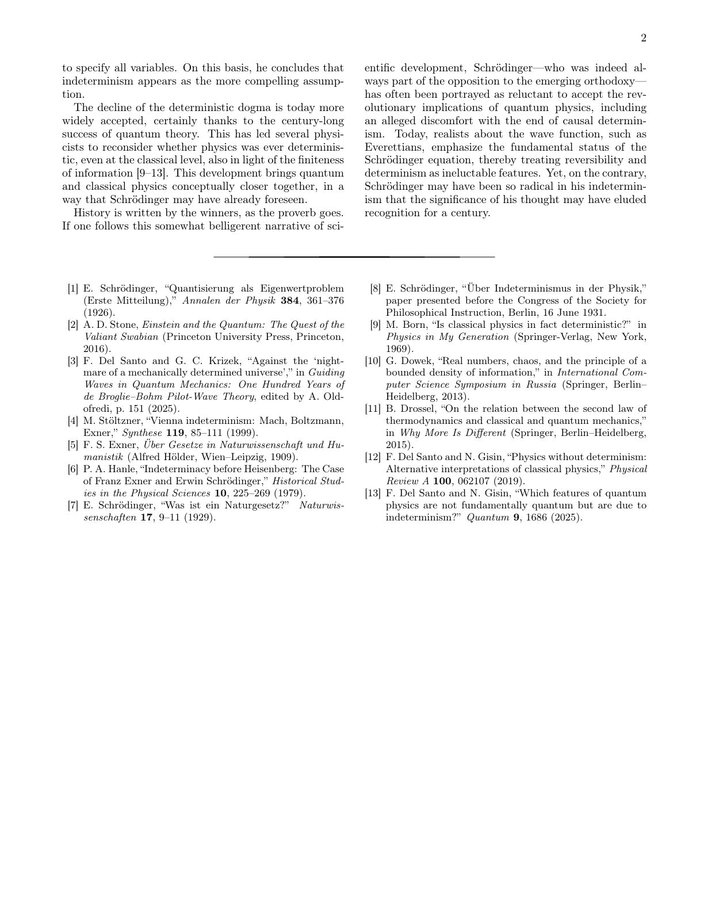
<figcaption class="paper-figure-caption"><b>Fig 1.</b> Low-resolution page preview, page 2</figcaption>
</figure>
</div>

<p><strong>Summary.</strong> This paper re-examines Erwin Schrödinger's views on determinism, arguing that he was not a resistor of quantum indeterminism. Instead, it details his early arguments for fundamental randomness based on statistical mechanics and the nature of physical laws. It is important for understanding the philosophical foundations of quantum theory.</p>
<p><strong>Why it may be interesting.</strong> It provides crucial historical context for understanding the philosophical underpinnings of quantum mechanics, which informs modern discussions on measurement problems and foundations of physics relevant to open quantum systems.</p>
<details>
<summary>Detailed structure</summary>
<p><strong>Main problem.</strong> The paper addresses the historical misconception that Schrödinger resisted quantum indeterminism, focusing on his actual views regarding determinism versus inherent randomness in physics.</p>
<p><strong>Main result.</strong> Schrödinger's perspective was fundamentally indeterministic, arguing that physical laws are inherently statistical and challenging the necessity of deterministic descriptions even at classical levels.</p>
<p><strong>Method.</strong> The analysis involves historical interpretation of Schrödinger's writings, particularly his 1931 essay on indeterminism, to reconstruct his philosophical stance.</p>
<p><strong>Model / system.</strong> The discussion centers on quantum mechanics itself, specifically contrasting the deterministic evolution implied by the wave function with the probabilistic nature observed in measurements and statistical laws.</p>
<p><strong>Key observables.</strong> Statistical outcomes (as opposed to single deterministic outcomes), irreversibility, and information content.</p>
<p><strong>Assumptions / limitations.</strong> The primary assumption is that a detailed reading of Schrödinger's work reveals a more radical indeterministic stance than commonly portrayed.</p>
<p><strong>Paper structure.</strong> The paper proceeds by first establishing the common portrayal of Schrödinger as anti-indeterminism, then systematically presenting his arguments from 1931 demonstrating an early embrace of fundamental statistical and indeterminate principles.</p>
</details>
<details>
<summary>Abstract</summary>
<p>Erwin Schrödinger is often portrayed as a reactionary who resisted the indeterminism introduced by quantum mechanics, but on closer inspection his views on determinism prove to be more complex and more radical.</p>
</details>
<p><sub><a href="#top">↑ back to top</a></sub></p>

<p><a id="paper-2608.10382"></a></p>
<h3 id="a-single-atom-in-front-of-a-mirror-is-a-universal-reservoir-computer"><a href="http://arxiv.org/abs/2608.10382v1">A Single Atom in Front of a Mirror is a Universal Reservoir Computer</a></h3>
<p><strong>Authors:</strong> Peter J. Ehlers, Phi Hung Nguyen, Kanu Sinha, Noelle Daigle, Travis W. Sawyer, Hendra I. Nurdin, Daniel Soh<br>
<strong>Type:</strong> theory · <strong>Category:</strong> other · <strong>PDF:</strong> <a href="https://arxiv.org/pdf/2608.10382v1">https://arxiv.org/pdf/2608.10382v1</a><br>
<strong>Analysis basis:</strong> full PDF text, analyzed in chunks
<strong>Topic relevance:</strong> <code>analog quantum simulation</code> <strong>2/5</strong> · <code>correlated / nonlocal dissipation</code> <strong>2/5</strong> · <code>quantum measurements</code> <strong>2/5</strong> · <code>Tavis-Cummings &amp; cavity-many-emitter</code> <strong>1/5</strong> · <code>driven-dissipative phase transition</code> <strong>1/5</strong> · <code>methods for driven-dissipative</code> <strong>1/5</strong> · <code>quantum optics experiment</code> <strong>1/5</strong></p>
<div class="figure-strip-hint">↔ Scroll figures horizontally</div>
<div class="paper-figures-scroll">
<figure class="paper-figure-card">
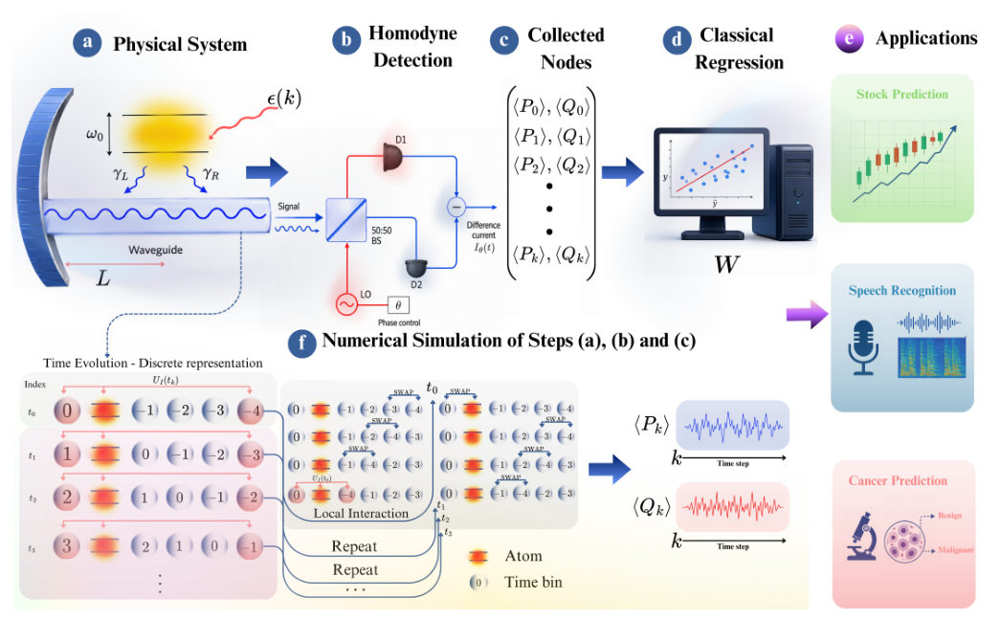
<figcaption class="paper-figure-caption"><b>Fig 1.</b> Figure 1: Overview of the minimal quantum reservoir computer performing real-world tasks. a, A single atom with transition energy ℏω0 sits a distance L in front of a mirror, driven by the discrete input ϵ(k) and decaying into the waveguide to the left and right at rates γL, γR. The round-trip delay τ = 2L/v produces coherent feedback. b–c, Homodyne detection collects quadrature nodes in each time bin. d, A classical linear readout W predicts the target yk. e, The three real-world tasks: financial prediction, speech recognition, and tumor classification. f, Time-bin matrix-product-state scheme (Methods). With delay ℓ= 4, at k = 0 a sequence of SWAP gates brings time bin −4 adjacent to the...</figcaption>
</figure>
<figure class="paper-figure-card">
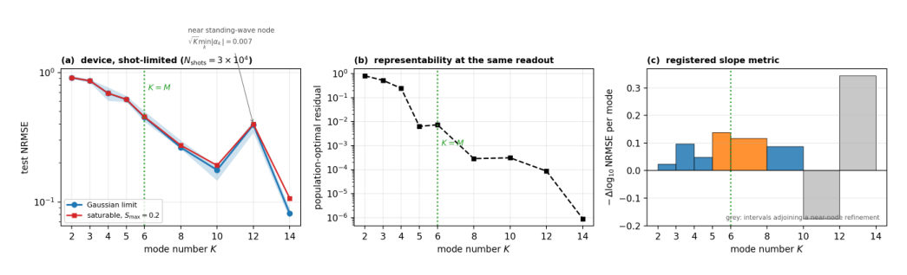
<figcaption class="paper-figure-caption"><b>Fig 2.</b> Figure 2: Convergence of a single device with mode number. a, Test-set approximation error (median over 12 input realizations; band, interquartile range) on a target with known Volterra kernels (M = 6, N = 2, random bounded kernels) versus the mode number K of one device with a nested dispersive comb at fixed retained band and fixed mirror distance, so that ∆0 = B/K and the readout node count is held fixed across the sweep. Blue: linear-transducer (Gaussian) regime, exact closed-form dynamics; red: the saturable device on the identical protocol (displaced-frame quasi-static Bloch route of Methods, quasi-static Bloch computation; Smax = 0.2, ⟨σz⟩driven from −1 to −0.833). Both carry shot...</figcaption>
</figure>
<figure class="paper-figure-card">
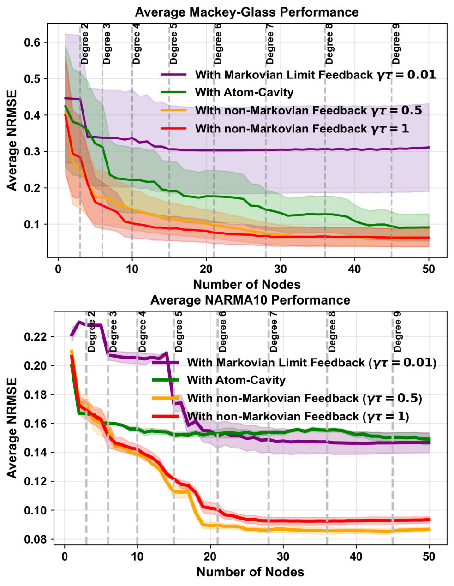
<figcaption class="paper-figure-caption"><b>Fig 3.</b> Figure 3: Nonlinearity transfer. A non-Markovian reservoir with a purely linear readout (feedback γτ = 0.5, 1) is compared against a Markovian atom–cavity reservoir trained to increasing polynomial order (vertical guides mark the polynomial degree at which the Markovian device gains each corresponding node) and against the Markovian- limit feedback γτ = 0.01, on Mackey–Glass (top) and NARMA10 (bottom). Parameters: ∆t = 1, θ = ϕ = π/3, g = (γ/2(1 + cos ϕ), γ/4(1 + cos ϕ)) with ϕ = π −ωLτ the round-trip phase entering the comparator’s mirror-modified decay (Methods, “Feedback-free comparison model”), averaged over εINPUT = (0.8, 1.0, 1.2, 1.4, 1.6)γ. The linear- readout feedback reservoir...</figcaption>
</figure>
<figure class="paper-figure-card">
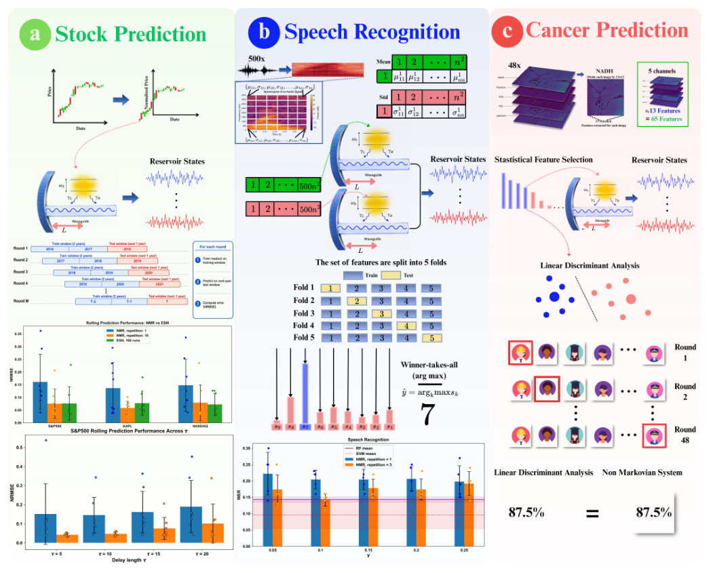
<figcaption class="paper-figure-caption"><b>Fig 4.</b> Figure 4: The single-atom reservoir across three real-world tasks. a, Financial prediction with a rolling two-year-train / one-year-test protocol, reported by NRMSE; parameters ∆t = 1, γ = 0.1, ϵ = 0.15, θ = ϕ = π/3, τ = 15, with a delay sweep τ = 5, 10, 15, 20. The quoted τ = 15 is the setting shared with panels (b,c) rather than this task’s optimum—shorter delays score better (0.042 ± 0.008 at τ = 5; Supplement Sec. S.9)—and is retained so the three panels report one device at one operating point. A persistence baseline ˆyt = yt−1 scores ≈0.037 on these identical windows, below both the reservoir and the echo-state comparator, which is why this task is a consistency check be- tween...</figcaption>
</figure>
</div>

<p><strong>Summary.</strong> This paper proves that a simple setup—a single atom placed near a mirror—can act as a Universal Reservoir Computer. By analyzing the system's dynamics in a linearized limit, the authors provide explicit constructive proofs for its universality. This work is significant because it demonstrates machine learning capability using minimal, passive quantum hardware components.</p>
<p><strong>Why it may be interesting.</strong> It directly applies advanced concepts from open quantum systems (Lindblad dynamics, cavity QED) to solve a problem in machine learning (Reservoir Computing), showing how fundamental physical constraints can yield universal computation capabilities.</p>
<details>
<summary>Detailed structure</summary>
<p><strong>Main problem.</strong> To demonstrate that a single, minimal physical quantum device can function as a universal reservoir computer, overcoming limitations associated with requiring entire classes of reservoirs.</p>
<p><strong>Main result.</strong> The authors prove that a single atom placed in front of a mirror is a provably universal reservoir computer under specific constructive conditions. This establishes universality using only one passive quantum object.</p>
<p><strong>Method.</strong> The proof utilizes the linear-transducer limit approximation, constructing explicit mathematical recipes based on geometric parameters and measurement settings to achieve arbitrary accuracy for fading-memory map approximation.</p>
<p><strong>Model / system.</strong> The physical system is a single two-level emitter (atom) interacting with its electromagnetic field modes reflected by a mirror. The dynamics are governed by a Lindblad master equation, incorporating memory effects from delayed light interaction and nonlinearity from atomic saturation.</p>
<p><strong>Key observables.</strong> Test NRMSE for dephasing/jitter; approximation error bounds ($\delta_{MN}N + A(M, N) \sqrt{2/M} ar{r}^M + e ar{\epsilon}$); feedback loss as a function of retained power fraction $\eta$.</p>
<p><strong>Important parameters / regimes.</strong> Atom–mirror distance $L$; number of accessible field modes ($K$); linearization parameter $s$; memory depth ($M$) and mode number ($N$).</p>
<p><strong>Assumptions / limitations.</strong> The core proof is established in the linear-transducer limit; achieving universality requires satisfying four constructive geometric/measurement conditions (D1–D6).</p>
<p><strong>Figures summary.</strong> Figures demonstrate error decay vs. accessible modes, quantify nonlinearity transfer by comparing readout types on target functions, and show feedback loss recovery upon restoring a small fraction of the coupling.</p>
<p><strong>Paper structure.</strong> The paper establishes the physical model via master equations, derives the linear-transducer limit for theoretical proof (Theorem 1), provides constructive conditions for universality, and concludes with comparisons to other reservoir architectures.</p>
</details>
<details>
<summary>Abstract</summary>
<p>Universal approximation in reservoir computing is typically associated with a class of reservoirs. We show that universality can be associated with a single reservoir, considering a minimal setup of a single atom in front of a mirror. In its linear-transducer limit, our reservoir is a universal approximator of fading-memory maps under an operating class of checkable conditions, with a rate constant measured at the operating point. A given reservoir can reach arbitrary accuracy by changing measurement settings. The proof gives an explicit recipe: for a target accuracy, it specifies the required physical resources and resonator modes. Enlarging the number of accessible modes increases the matchable kernel span without reducing capability. Beyond the linear limit, the atom's saturation replaces high-order polynomial readouts, and the device operates on real-world tasks alongside classical baselines. Our results highlight an example of universality with a minimal quantum setup.</p>
</details>
<p><sub><a href="#top">↑ back to top</a></sub></p>

<p><a id="paper-2608.10643"></a></p>
<h3 id="zero-transfer-on-mixed-graphs"><a href="http://arxiv.org/abs/2608.10643v1">Zero transfer on mixed graphs</a></h3>
<p><strong>Authors:</strong> Xingkun Song, Huiqiu Lin<br>
<strong>Type:</strong> theory · <strong>Category:</strong> other · <strong>PDF:</strong> <a href="https://arxiv.org/pdf/2608.10643v1">https://arxiv.org/pdf/2608.10643v1</a><br>
<strong>Analysis basis:</strong> full PDF text, analyzed in chunks
<strong>Topic relevance:</strong> <code>Keldysh / 2PI / non-Gaussian methods</code> <strong>2/5</strong> · <code>driven-dissipative phase transition</code> <strong>2/5</strong> · <code>methods for driven-dissipative</code> <strong>2/5</strong> · <code>analog quantum simulation</code> <strong>1/5</strong> · <code>correlated / nonlocal dissipation</code> <strong>1/5</strong> · <code>non-equilibrium universality</code> <strong>1/5</strong> · <code>quantum measurements</code> <strong>1/5</strong></p>
<div class="figure-strip-hint">↔ Scroll figures horizontally</div>
<div class="paper-figures-scroll">
<figure class="paper-figure-card">
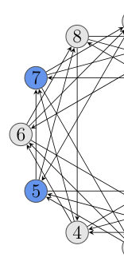
<figcaption class="paper-figure-caption"><b>Fig 1.</b> Fig. 1: Zero transfer in G(Z12, {2, 3, 8}).</figcaption>
</figure>
</div>

<p><strong>Summary.</strong> This paper develops rigorous mathematical criteria to determine when a quantum state transfer between two nodes on a mixed graph is impossible (zero transfer). It achieves this by analyzing the spectral properties of the graph's Hermitian adjacency matrix, providing specific nonexistence results for prime-ordered circulant graphs and detailed classifications for composite orders.</p>
<p><strong>Why it may be interesting.</strong> This work provides deep mathematical tools for understanding quantum transport phenomena, which are foundational to designing robust quantum communication channels or characterizing decoherence mechanisms in complex quantum systems.</p>
<details>
<summary>Detailed structure</summary>
<p><strong>Main problem.</strong> The paper characterizes the phenomenon of 'zero transfer'—where quantum state transition amplitudes vanish for all time—on mixed graphs.</p>
<p><strong>Main result.</strong> Zero transfer is characterized by vanishing entries in the spectral idempotents associated with the graph's Hermitian adjacency matrix. For oriented circulant graphs of prime order, zero transfer cannot occur.</p>
<p><strong>Method.</strong> The analysis uses advanced linear algebra techniques, including Taylor series expansions and spectral decomposition theorems applied to quantum walks governed by a Hermitian Hamiltonian.</p>
<p><strong>Model / system.</strong> The model is a continuous-time quantum walk on a mixed graph $\Gamma$, whose evolution is dictated by the Hermitian adjacency matrix $H_\Gamma$. The system involves both undirected edges and directed arcs.</p>
<p><strong>Key observables.</strong> Zero transfer (vanishing transition amplitude $U(t)_{u,v} = 0$ for all $t \ge 0$), spectral idempotent entries $(E_{	heta_r})_{u,v}$, and the structure of the graph's adjacency matrix.</p>
<p><strong>Important parameters / regimes.</strong> Graph order ($n$), primality of $n$, and the specific connectivity defined by the generating set $C$ in circulant graphs.</p>
<p><strong>Assumptions / limitations.</strong> The analysis heavily relies on the properties of Hermitian matrices, spectral decomposition, and algebraic number theory related to roots of unity when analyzing circulant structures.</p>
<p><strong>Figures summary.</strong> Figure 1 provides an example of zero transfer for a specific mixed graph $G(\mathbb{Z}_{12}, \{2, 3, 8\})$, showing the set of vertices exhibiting this property. Tables summarize counts and sets for various small even orders ($n \le 20$).</p>
<p><strong>Paper structure.</strong> The paper builds from general necessary conditions (Taylor expansion) to more precise spectral characterizations (spectral idempotents), culminating in detailed case studies on oriented circulant graphs, especially analyzing the prime vs. composite order cases.</p>
</details>
<details>
<summary>Abstract</summary>
<p>In this paper, we investigate zero transfer on mixed graphs. Zero transfer is a quantum walk phenomenon in which the transition amplitude between two vertices is identically zero for all times, so that no quantum state transfer occurs between them. Using the Hermitian adjacency matrix, we derive necessary and sufficient conditions for zero transfer in mixed graphs. We then specialize these criteria to oriented circulant graphs, obtaining nonexistence results for prime order, structural restrictions for even order, and exhaustive computational classifications for small orders.</p>
</details>
<p><sub><a href="#top">↑ back to top</a></sub></p>

<p><a id="paper-2608.10076"></a></p>
<h3 id="generalized-master-stability-of-heterogeneous-delay-coupled-networks"><a href="http://arxiv.org/abs/2608.10076v1">Generalized Master Stability of Heterogeneous Delay-Coupled Networks</a></h3>
<p><strong>Authors:</strong> Ana Elisa D. Barioni, Arthur N. Montanari, Adilson E. Motter<br>
<strong>Type:</strong> theory · <strong>Category:</strong> disordered systems and neural networks · <strong>PDF:</strong> <a href="https://arxiv.org/pdf/2608.10076v1">https://arxiv.org/pdf/2608.10076v1</a><br>
<strong>Analysis basis:</strong> full PDF text, analyzed in chunks
<strong>Topic relevance:</strong> <code>analog quantum simulation</code> <strong>2/5</strong> · <code>correlated / nonlocal dissipation</code> <strong>2/5</strong> · <code>methods for driven-dissipative</code> <strong>2/5</strong> · <code>Keldysh / 2PI / non-Gaussian methods</code> <strong>1/5</strong> · <code>driven-dissipative phase transition</code> <strong>1/5</strong> · <code>non-equilibrium universality</code> <strong>1/5</strong></p>
<div class="figure-strip-hint">↔ Scroll figures horizontally</div>
<div class="paper-figures-scroll">
<figure class="paper-figure-card">
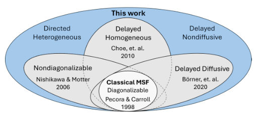
<figcaption class="paper-figure-caption"><b>Fig 1.</b> FIG. 1. Key extensions of the MSF framework to delay- coupled systems, where each set represents a methodological advance toward a broader class of network systems.</figcaption>
</figure>
<figure class="paper-figure-card">
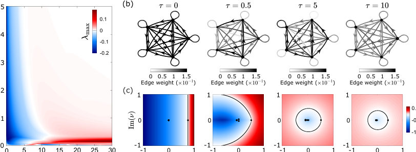
<figcaption class="paper-figure-caption"><b>Fig 2.</b> FIG. 2. MSF analysis of delay-coupled SL oscillators. (a) MTLE of the synchronous state as a function of the coupling strength κ and time delay τ for an all-to-all network configuration, where blue (red) regions indicate stable (unstable) synchronization. Discontinuities observed for small κ arise from the multistability of the system, as further discussed in SM [43], Sec. SII. (b, c) Optimal network configuration (b) and corresponding MSF landscape (c) for increasing τ. In panel b, the edge thickness indicates the interaction weights Aij. Panel c shows the stability region Ωin the complex plane (blue) and the eigenvalues of the corresponding adjacency matrix (dots), which lie entirely...</figcaption>
</figure>
<figure class="paper-figure-card">
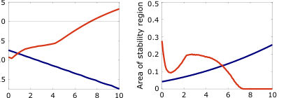
<figcaption class="paper-figure-caption"><b>Fig 3.</b> FIG. 3. MSF comparison analysis for the SL and LK mod- els. (a, b) MSF landscape of the SL (a) and LK (b) models for τ = 0.1, showing λmax as a function of the tunable ad- jacency matrix eigenvalue ν for different indegrees d⋆. The stability region Ωis characterized by its area and depth (i.e., minν λmax). (c) Dependence of the stability region’s depth (left) and area (right) on d⋆for the SL and LK models. The SL model parameters are set as in Fig. 2, while the LK model parameters are specified in SM [43], Sec. SIII.</figcaption>
</figure>
<figure class="paper-figure-card">

<figcaption class="paper-figure-caption"><b>Fig 4.</b> Figure 3 contrasts the MSF landscapes of the SL and LK models. In the SL model, increasing d⋆monotonically expands and deepens the stability region. This behavior is consistent with our theoretical predictions, since the delay is small and the SL model satisfies the identity Ja- cobian coupling. The LK model exhibits the opposite trend: increasing d⋆destabilizes synchronization, as the stability region progressively shrinks and flattens, vanish- ing at d⋆= 7.4. Because in this model the state variable Nj is not directly coupled to other oscillators (and hence D(τ)h ̸= In), the monotonic dependence of Ωj on dj is indeed not guaranteed to hold, and hence the MSF anal- ysis of all subsystems...</figcaption>
</figure>
<figure class="paper-figure-card">
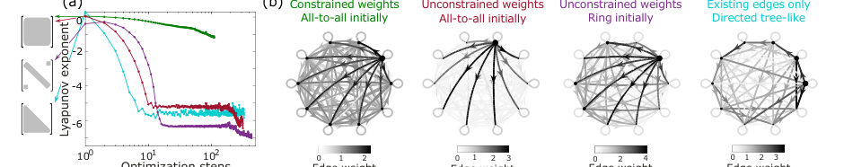
<figcaption class="paper-figure-caption"><b>Fig 5.</b> FIG. 4. Network optimization to enhance synchronizability. (a) Minimization of the MTLE of the LK model for different initial configurations and optimization constraints: all-to-all with fixed total weight (green); all-to-all with unconstrained weights (red); ring with unconstrained weights (purple); and directed tree-like structure with optimization restricted to existing edges and all others are set to zero (cyan). The structures of the initial adjacency matrices are shown on the left. (b) Resulting optimal network, where arrow direction and line thickness indicate edge directionality and weight, respectively; node size scales with outdegree, highlighting the most dominant nodes. The...</figcaption>
</figure>
</div>

<p><strong>Summary.</strong> This work extends the Master Stability Function theory to analyze synchronization in complex, weighted, directed networks with time delays. It demonstrates that network heterogeneity and nonreciprocity are crucial resources for maintaining stable synchronization. The paper provides optimization techniques to design optimal network topologies that enhance collective stability.</p>
<p><strong>Why it may be interesting.</strong> While focused on classical coupled oscillators, the mathematical machinery—analyzing spectral properties of large matrices derived from complex dynamics ($\dot{\eta} = J_1 \eta + J_2 \eta(t-	au)$) and optimizing structure for stability—is highly relevant to understanding collective behavior in quantum systems like superconducting circuits or photonic arrays.</p>
<details>
<summary>Detailed structure</summary>
<p><strong>Main problem.</strong> The paper extends synchronization analysis, using the Master Stability Function (MSF) framework, to complex delay-coupled networks that exhibit degree heterogeneity, weighting, and directionality.</p>
<p><strong>Main result.</strong> Synchronization stability in these heterogeneous, delayed networks can be enhanced by structural nonreciprocity and network heterogeneity, potentially surpassing the stability achieved in simpler all-to-all or non-delayed systems.</p>
<p><strong>Method.</strong> The authors generalize the MSF framework by analyzing the system's dynamics using Jordan canonical form analysis to handle time delays and complex coupling structures. They develop an optimization method to find optimal edge weights maximizing synchronization stability.</p>
<p><strong>Model / system.</strong> The study analyzes delay-coupled networks of identical oscillators, exemplified by the Stuart-Landau (SL) and Lang-Kobayashi (LK) models. The dynamics are governed by coupled differential equations incorporating time delays ($  au$).</p>
<p><strong>Key observables.</strong> Synchronization stability, quantified by the maximum transverse Lyapunov exponent (MTLE), $\lambda_{\max}$ (must be negative for stability); Stability region ($\Omega$) in the complex plane.</p>
<p><strong>Important parameters / regimes.</strong> Time delay ($   au$), coupling strength ($\kappa$), network structure parameters (degree distribution, weights $A_{jk}$).</p>
<p><strong>Assumptions / limitations.</strong> The standard MSF assumptions are violated by time delays; the method addresses this using Jordan canonical form analysis. Optimization relies on iterative perturbation methods.</p>
<p><strong>Figures summary.</strong> Figures illustrate how increasing delay ($ au$) shrinks the stability region $\Omega$ for SL models, and show optimization procedures driving networks towards heterogeneous, directional structures that maximize synchronizability.</p>
<p><strong>Paper structure.</strong> The paper first introduces the generalization of MSF to handle delays and heterogeneity. It then applies this framework to specific models (SL/LK), demonstrating how structural properties like indegree determine stability boundaries. Finally, it presents network optimization and sparsification analyses to quantify robustness.</p>
</details>
<details>
<summary>Abstract</summary>
<p>Time delays are ubiquitous in physical and biological networked systems, playing a fundamental role in the emergence and stability of collective behavior. Yet, existing theoretical methods for synchronization analysis of delay-coupled systems are largely limited to networks with homogeneous degree distributions. Here, we extend the master stability function framework to a broad class of degree-heterogeneous, weighted, and directed delay-coupled networks. The analysis reveals that synchronization can be enhanced in heterogeneous networks compared to homogeneous ones, including all-to-all networks, which are known to be optimal in non-delayed systems. To identify optimal heterogeneous structures, we develop a network optimization method that finds directional, edge-weighted configurations maximizing synchronization stability. Our results show that, in delay-coupled networks, heterogeneity and nonreciprocity are key resources for synchronization.</p>
</details>
<p><sub><a href="#top">↑ back to top</a></sub></p>

<p><a id="paper-2608.11188"></a></p>
<h3 id="inferring-stealthy-hyperuniform-correlations-from-quantum-transport"><a href="http://arxiv.org/abs/2608.11188v1">Inferring stealthy hyperuniform correlations from quantum transport</a></h3>
<p><strong>Authors:</strong> Natanael C. Costa, Mauro S. Ferreira, Caio Lewenkopf, Felipe A. Pinheiro, Paul J. Steinhardt, Salvatore Torquato, Carlo Vanoni<br>
<strong>Type:</strong> theory · <strong>Category:</strong> disordered systems and neural networks · <strong>PDF:</strong> <a href="https://arxiv.org/pdf/2608.11188v1">https://arxiv.org/pdf/2608.11188v1</a><br>
<strong>Analysis basis:</strong> full PDF text, analyzed in chunks
<strong>Topic relevance:</strong> <code>driven-dissipative phase transition</code> <strong>2/5</strong> · <code>Keldysh / 2PI / non-Gaussian methods</code> <strong>1/5</strong> · <code>analog quantum simulation</code> <strong>1/5</strong> · <code>correlated / nonlocal dissipation</code> <strong>1/5</strong> · <code>interference shaping light</code> <strong>1/5</strong> · <code>methods for driven-dissipative</code> <strong>1/5</strong> · <code>non-equilibrium universality</code> <strong>1/5</strong> · <code>quantum measurements</code> <strong>1/5</strong></p>
<div class="figure-strip-hint">↔ Scroll figures horizontally</div>
<div class="paper-figures-scroll">
<figure class="paper-figure-card">
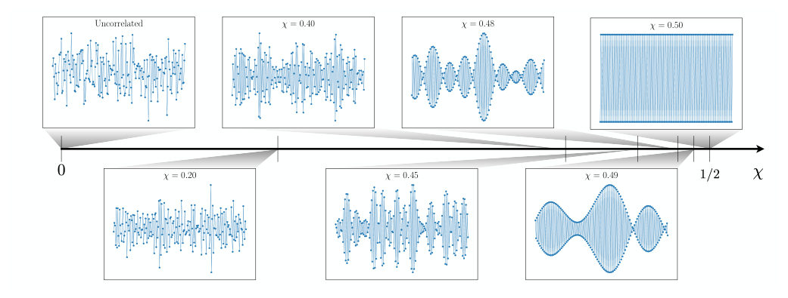
<figcaption class="paper-figure-caption"><b>Fig 1.</b> FIG. 1. Real space potential wj for different values of χ, ranging from the uncorrelated disorder case (χ = 0) on the left to the absence of disorder (χ = 1/2) on the right. Correlations are readily observed at large χ values (χ = 0.4 and above) but are not apparent at intermediate values (χ = 0.2).</figcaption>
</figure>
<figure class="paper-figure-card">
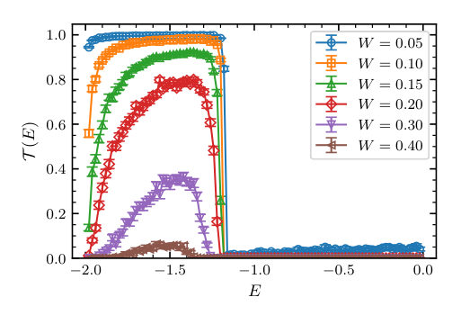
<figcaption class="paper-figure-caption"><b>Fig 2.</b> FIG. 2. Energy-resolved transmittance T (E) for a chain with N = 104 sites, fixed stealthy parameter χ = 0.30, and differ- ent disorder strengths W. Increasing W suppresses the abso- lute value of the transmittance inside the high-transmittance window, while the position of the sharp drop remains approx- imately unchanged.</figcaption>
</figure>
<figure class="paper-figure-card">
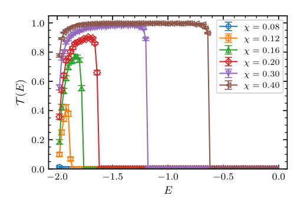
<figcaption class="paper-figure-caption"><b>Fig 3.</b> FIG. 3. Energy-resolved transmittance T (E) for a chain with N = 104 sites, fixed disorder strength W = 0.10, and different stealthy parameters χ. Increasing χ shifts the sharp drop in T (E) to higher energies and enlarges the high-transmittance window.</figcaption>
</figure>
<figure class="paper-figure-card">
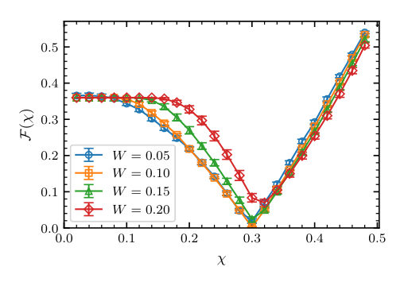
<figcaption class="paper-figure-caption"><b>Fig 4.</b> FIG. 4. Misfit function F as a function of the trial stealthy parameter χ for a target spectrum generated with Wtar = 0.10 and χtar = 0.30. Distinct curves represent different trial val- ues of W. The minimum remains close to the target value χtar = 0.30, displaying only small shifts when the trial dis- order strength differs from Wtar. Here, we analyzed a chain with N = 104 sites.</figcaption>
</figure>
<figure class="paper-figure-card">
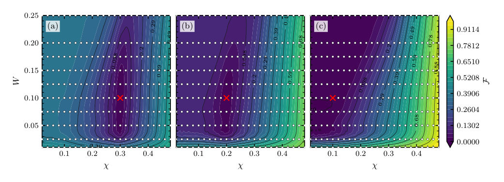
<figcaption class="paper-figure-caption"><b>Fig 5.</b> FIG. 5. (a) Contour plot of the misfit function F(χ, W) for a target spectrum generated with Wtar = 0.10 and χtar = 0.30. The red cross indicates the target parameters. The minimum is well defined and occurs close to the target point (red cross), showing that the inverse protocol can recover both W and χ when the transmittance spectrum displays a clear stealthy-induced jump. (b) Contour plot of the misfit function for a target spectrum generated with Wtar = 0.10 and χtar = 0.20. (c) Contour plot of the misfit function for a target spectrum generated with Wtar = 0.10 and χtar = 0.10. The red crosses determine the target values.</figcaption>
</figure>
</div>

<p><strong>Summary.</strong> The paper introduces a novel technique to determine the stealthiness parameter ($\chi$) characterizing hyperuniform disorder by analyzing quantum transport measurements. Using a 1D tight-binding model, they show that the energy-dependent transmittance spectrum acts as a unique fingerprint of this correlation. This allows researchers to extract crucial structural information from readily measurable electrical conductance data.</p>
<p><strong>Why it may be interesting.</strong> This work provides a powerful example of using transport spectroscopy as an inverse diagnostic tool. For AMO/open quantum systems, this methodology could be adapted to characterize complex disorder potentials (e.g., engineered lattice impurities or random coupling strengths) in mesoscopic devices where direct structural characterization is intractable.</p>
<details>
<summary>Detailed structure</summary>
<p><strong>Main problem.</strong> The central problem is developing a method to infer the structural properties, specifically 'stealthy hyperuniform correlations' characterized by parameter $\chi$, from measurable quantum transport data.</p>
<p><strong>Main result.</strong> Transmittance spectra serve as unique fingerprints of stealthy hyperuniform disorder, allowing for the recovery of the correlation parameter $\chi$ via an inverse protocol.</p>
<p><strong>Method.</strong> The authors propose and implement a conductance-based inverse protocol by minimizing a misfit function between calculated energy-dependent transmittance $T(E)$ and a target spectrum.</p>
<p><strong>Model / system.</strong> The model is a one-dimensional tight-binding chain subjected to on-site disorder. This disorder is specifically engineered in momentum space to exhibit stealthy hyperuniform correlations, defined by a spectral cutoff $S(k) = \Theta(|k| - K)$, where $K=2\pi\chi$.</p>
<p><strong>Key observables.</strong> Energy-dependent transmittance $T(E)$ (or conductance), and the misfit function value.</p>
<p><strong>Important parameters / regimes.</strong> Stealthiness parameter $\chi$, disorder strength $W$, and the energy window $[E_-, E_+]$ used for fitting.</p>
<p><strong>Assumptions / limitations.</strong> The primary assumption is that the transport response function $T(E)$ retains a unique signature of the underlying structural correlations ($\chi$) even when direct measurement of the disorder potential is impossible.</p>
<p><strong>Figures summary.</strong> Figures illustrate the real-space potential for varying $\chi$, show how increasing $W$ suppresses $T(E)$ while keeping the spectral drop position stable, and demonstrate the systematic shift of the transparent energy window as $\chi$ changes.</p>
<p><strong>Paper structure.</strong> The paper establishes the physical problem (inferring $\chi$), details the model setup (1D chain with stealthy disorder), outlines the computational method (RGF for $T(E)$), and culminates in demonstrating the inverse protocol by minimizing a misfit function over the energy spectrum to recover $(\chi, W)$.</p>
</details>
<details>
<summary>Abstract</summary>
<p>Stealthy hyperuniform disordered systems exhibit strongly suppressed long-wavelength fluctuations, producing correlated disorder with unusual consequences for wave propagation. A central quantity characterizing these systems is the stealthiness parameter $χ$, which controls the range of excluded Fourier components in the disorder spectrum. However, in realistic settings, the microscopic disorder configuration may not be directly accessible, making it challenging to determine $χ$ from structural information alone. Here, we propose a conductance-based inverse protocol to recover stealthy hyperuniform correlations from transport data. As a proof of concept, we study spinless fermions in a one-dimensional tight-binding chain connected to clean semi-infinite leads, with on-site disorder generated by imposing a stealthy spectrum $S(k)=Θ(|k|-K)$, where $K=2πχ$. The energy-dependent transmittance is computed using a recursive Green's function method and compared with target spectra through a misfit function defined over an energy window. We show that the position of the sharp drop separating high- and low-transmittance regions is strongly controlled by $χ$, while the disorder strength $W$ mainly affects the absolute magnitude of the transmittance. As a result, the misfit function displays a clear minimum close to the target stealthy parameter. Our results demonstrate that transmittance spectra can serve as fingerprints of stealthy hyperuniform disorder, providing a practical route to infer correlated-disorder parameters from transport measurements.</p>
</details>
<p><sub><a href="#top">↑ back to top</a></sub></p>

<p><a id="paper-2608.11186"></a></p>
<h3 id="skin-anderson-localization-transition-in-strongly-coupled-disordered-non-hermitian-chains"><a href="http://arxiv.org/abs/2608.11186v1">Skin-Anderson Localization Transition in Strongly Coupled Disordered Non-Hermitian Chains</a></h3>
<p><strong>Authors:</strong> S Rahul<br>
<strong>Type:</strong> theory · <strong>Category:</strong> disordered systems and neural networks · <strong>PDF:</strong> <a href="https://arxiv.org/pdf/2608.11186v1">https://arxiv.org/pdf/2608.11186v1</a><br>
<strong>Analysis basis:</strong> full PDF text, analyzed in chunks
<strong>Topic relevance:</strong> <code>analog quantum simulation</code> <strong>2/5</strong> · <code>driven-dissipative phase transition</code> <strong>2/5</strong> · <code>Frenkel-Kontorova</code> <strong>1/5</strong> · <code>correlated / nonlocal dissipation</code> <strong>1/5</strong> · <code>methods for driven-dissipative</code> <strong>1/5</strong> · <code>non-equilibrium universality</code> <strong>1/5</strong></p>
<div class="figure-strip-hint">↔ Scroll figures horizontally</div>
<div class="paper-figures-scroll">
<figure class="paper-figure-card">

<figcaption class="paper-figure-caption"><b>Fig 1.</b> FIG. 2: Complex energy spectra (top row) and corre- sponding right eigenstate probability distributions of in lower chain (bottom row) for (a,d) a = 0, (b,e) a = 28, and (c,f) a = 50. At a = 0, the spectrum exhibits a point-gap topology with skin-localized eigenstates. At the critical value a = 28, the point gap closes. For a = 50, the spectrum remains line-gapped, while the eigenstates relocalize at the boundary. Parameters: N = 200, γ = 1, λ = 1.5, J = 1, t = 28, and W = 12.0.</figcaption>
</figure>
<figure class="paper-figure-card">
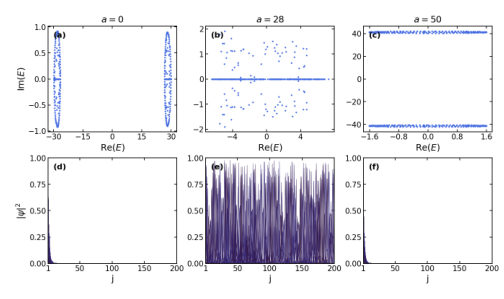
<figcaption class="paper-figure-caption"><b>Fig 2.</b> Figure 1 shows the spatial probability distributions of all right eigenstates in the Hatano–Nelson (upper) and Hermitian (lower) chains for different values of the asym- metric inter-chain coupling a. For a = 0, both chains ex- hibit pronounced boundary localization, indicating that the non-Hermitian skin effect induced by the Hatano– Nelson chain is efficiently transferred to the Hermitian</figcaption>
</figure>
<figure class="paper-figure-card">
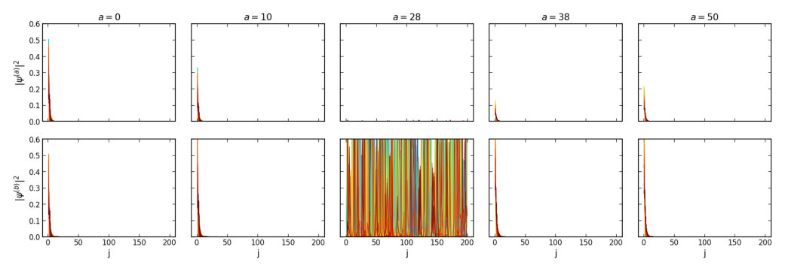
<figcaption class="paper-figure-caption"><b>Fig 3.</b> FIG. 1: Spatial probability distributions of all right eigenstates in the (top) Hatano–Nelson chain and (bottom) Hermitian chain for a = 0, 10, 28, 38, and 50. The eigenstates exhibit boundary localization for a &lt; t and a &gt; t, characteristic of the non-Hermitian skin effect. At the critical point a = t = 28, the suppression of skin localization results in spatially distributed eigenstates associated with disorder-induced Anderson localization. Parameters: N = 200, t = 28, γ = 1.0, λ = 1.5, J = 1.0, and W = 12.</figcaption>
</figure>
<figure class="paper-figure-card">
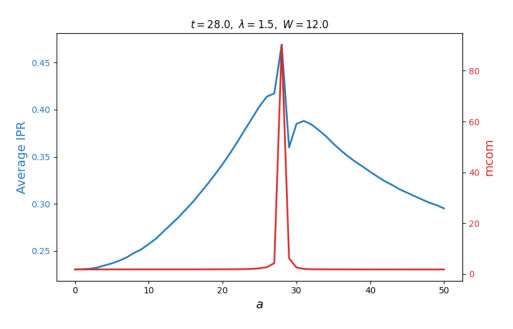
<figcaption class="paper-figure-caption"><b>Fig 4.</b> FIG. 3: Disorder-averaged inverse participation ratio (IPR) and mean center of mass (mcom) as functions of the asymmetric inter-chain coupling a. Parameters: N = 200, γ = 1, λ = 1.5, J = 1, t = 28, and W = 12, averaged over 50 disorder realizations.</figcaption>
</figure>
<figure class="paper-figure-card">

<figcaption class="paper-figure-caption"><b>Fig 5.</b> Figure 3 illustrates the variation of the disorder-averaged IPR and the mcom as functions of the inter-chain cou- pling parameter a. For a &lt; t, the average IPR increases steadily with increasing a, indicating that the skin modes become progressively less localized and spread over a larger portion of the lattice. As a approaches t, the lo- calization reaches its weakest, reflected by the maximum</figcaption>
</figure>
</div>

<p><strong>Summary.</strong> This paper explores the competition between disorder (Anderson localization) and non-reciprocity (NHSE) in a two-leg ladder model. By tuning the inter-chain coupling asymmetry, the authors demonstrate successive transitions in eigenstate behavior, showing that robust skin localization can persist even when the energy spectrum topology changes away from conventional point gaps.</p>
<p><strong>Why it may be interesting.</strong> This work provides a detailed theoretical framework for understanding how competing non-Hermitian and random potentials dictate fundamental transport properties like localization, which has implications for designing robust quantum devices.</p>
<details>
<summary>Detailed structure</summary>
<p><strong>Main problem.</strong> The study investigates the complex interplay between disorder-induced Anderson localization and non-Hermitian effects, specifically the Non-Hermitian Skin Effect (NHSE).</p>
<p><strong>Main result.</strong> Tuning the asymmetry of inter-chain coupling drives successive transitions in eigenstate nature: from skin localization to Anderson localization, and back to skin localization even when the energy spectrum exhibits a line-gap topology.</p>
<p><strong>Method.</strong> The analysis involves calculating the Inverse Participation Ratio (IPR) and Mean Center of Mass ($  ext{mcom}$) averaged over disorder realizations to diagnose the spatial extent and localization type of eigenstates.</p>
<p><strong>Model / system.</strong> The model is a two-leg ladder system comprising a Hatano–Nelson chain coupled to a Hermitian chain via asymmetric inter-chain hopping. The Hamiltonian incorporates onsite disorder terms ($\Delta_j$) and coupling parameters ($t, a$).</p>
<p><strong>Key observables.</strong> Inverse Participation Ratio ($ ext{IPR}$), Mean Center of Mass ($\langle  ext{mcom} 
angle$), and the complex energy spectrum topology (point-gap vs. line-gap).</p>
<p><strong>Important parameters / regimes.</strong> The asymmetry parameter '$a$' is the primary control, which tunes the competition between localization mechanisms; critical points include $a=0$, $a=t$, and $a>t$.</p>
<p><strong>Assumptions / limitations.</strong> The analysis relies on treating the system as a tight-binding model with disorder, focusing on the spectral and spatial properties of eigenstates.</p>
<p><strong>Figures summary.</strong> Figures illustrate the transition from boundary localization (skin effect) to delocalized states at $a=t$, confirming these transitions via $\langle 	ext{IPR} 
angle$ minima and $\langle 	ext{mcom} 
angle$ peaks at the critical coupling strength.</p>
<p><strong>Paper structure.</strong> The paper systematically analyzes how varying the inter-chain asymmetry parameter '$a$' drives successive phase transitions in localization, mapping out regimes where NHSE dominates versus where disorder-induced Anderson localization prevails.</p>
</details>
<details>
<summary>Abstract</summary>
<p>The interplay between disorder and non-Hermitian effects gives rise to a variety of intriguing localization phenomena. While disorder tends to localize the eigenstates through Anderson localization, non-Hermitian non-reciprocity promotes the formation of skin modes by driving the eigenstates toward the system boundaries giving rise to non-Hermitian skin effect (NHSE). In this work, we investigate the interplay between these competing mechanisms in a two-leg ladder consisting of a Hatano-Nelson chain coupled to a Hermitian chain via asymmetric inter-chain hopping, with strong disorder present in both chains. We show that tuning the asymmetry of the inter-chain coupling induces successive transitions in the nature of the eigenstates, from skin localization to Anderson localization and subsequently back to skin localization. Remarkably, the non-Hermitian skin effect re-emerges even though the energy spectrum exhibits a line-gap topology, demonstrating that robust skin localization can persist beyond the conventional point-gap regime.</p>
</details>
<p><sub><a href="#top">↑ back to top</a></sub></p>

<p><a id="paper-2608.10890"></a></p>
<h3 id="theoretical-analysis-towards-accurate-optomechanical-detection-of-quantum-gravity-effects"><a href="http://arxiv.org/abs/2608.10890v1">Theoretical analysis towards accurate optomechanical detection of quantum gravity effects</a></h3>
<p><strong>Authors:</strong> Ying Li, Yan Li, Chengsong Zhao, Najmeh Eshaqi-Sani, Wenlin Li<br>
<strong>Type:</strong> theory · <strong>Category:</strong> other · <strong>PDF:</strong> <a href="https://arxiv.org/pdf/2608.10890v1">https://arxiv.org/pdf/2608.10890v1</a><br>
<strong>Analysis basis:</strong> full PDF text, analyzed in chunks
<strong>Topic relevance:</strong> <code>quantum measurements</code> <strong>2/5</strong> · <code>Keldysh / 2PI / non-Gaussian methods</code> <strong>1/5</strong> · <code>driven-dissipative phase transition</code> <strong>1/5</strong> · <code>methods for driven-dissipative</code> <strong>1/5</strong> · <code>quantum optics experiment</code> <strong>1/5</strong></p>
<div class="figure-strip-hint">↔ Scroll figures horizontally</div>
<div class="paper-figures-scroll">
<figure class="paper-figure-card">
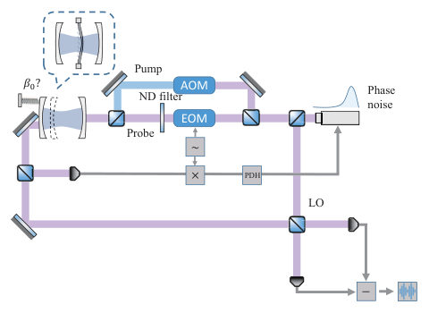
<figcaption class="paper-figure-caption"><b>Fig 1.</b> FIG. 1. Schematic of the optomechanical detector. A probe beam is incident on an optomechanical cavity that can be configured either as a FP cavity terminated by a movable end mirror or as a MiM system with a thin dielectric membrane placed between two fixed mirrors. The probe beam is phase- modulated by an EOM and locked to cavity resonance using the PDH technique. The reflected probe light is analyzed by balanced homodyne detection to monitor the mechanical displacement and extract the nonlinear parameter βNL. A second pump beam is simultaneously injected into the cavity to drive and manipulate the mechanical oscillator.</figcaption>
</figure>
<figure class="paper-figure-card">
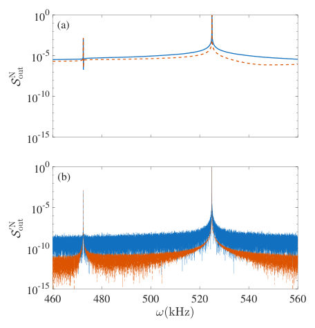
<figcaption class="paper-figure-caption"><b>Fig 2.</b> FIG. 2. Comparison of the output spectra of the probe field with and without phase noise. (a): Power spectrum obtained from Eq. (36). (b): Spectrum calculated via the FFT according to Eq. (37). Each spectrum is normalized to its maximum value, that is, SN out = Sout/ max{Sout} and S′N out = S′ out/ max{Sout}. In addition to the parameters listed in Table I, we set βNL = 0, Ω/ωb = 0.9, φ = 0.01, γτ = 5.25 × 10−6, P1 = 2 µW, P2 = 50 µW, and Pp = 5 µW.</figcaption>
</figure>
<figure class="paper-figure-card">
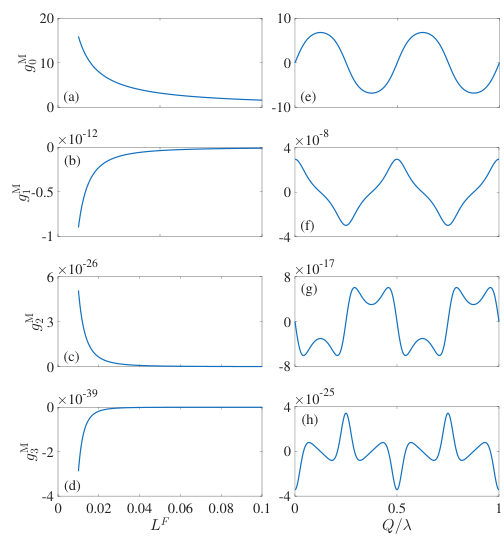
<figcaption class="paper-figure-caption"><b>Fig 3.</b> FIG. 3. (a)–(d): Dependence of the first- to fourth-order optomechanical coupling coefficients of the FP OMS on the cavity length LF . (e)–(h): Dependence of the first- to fourth- order optomechanical coupling coefficients of the MiM OMS on the membrane position Q for a fixed cavity length. Pa- rameters are taken from Tab. I.</figcaption>
</figure>
<figure class="paper-figure-card">
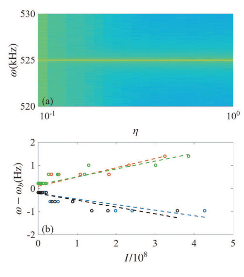
<figcaption class="paper-figure-caption"><b>Fig 4.</b> FIG. 4. (a): Output spectrum of the probe field as a func- tion of the power factor η when the membrane is positioned at Q1/λ = 0.055. (b): Peak frequency of the probe spec- trum versus oscillator amplitude for the membrane positions Q1/λ = 0.055 (blue), Q2/λ = 0.194 (red), Q3/λ = 0.305 (green), and Q4/λ = 0.445 (black). Dashed lines of corre- sponding colors represent linear fits to the data. Here we set φ = 0 to eliminate the influence of the calibration signal. Other parameters are the same as those used in Fig. 2.</figcaption>
</figure>
<figure class="paper-figure-card">
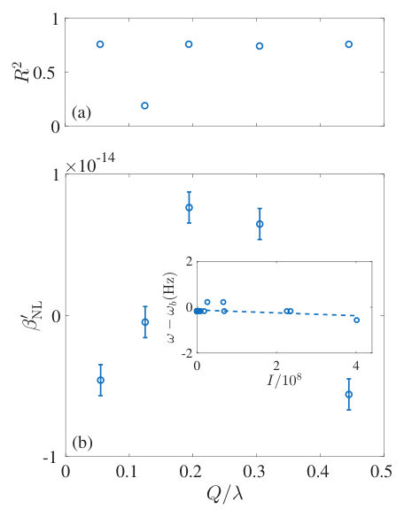
<figcaption class="paper-figure-caption"><b>Fig 5.</b> FIG. 5. (a) Linear regression coefficients R2 corresponding to the measured spurious signal β′ NL for different membrane po- sitions. (b) Magnitude of the spurious β′ NL together with its 95% confidence interval. Then inset in (b): Peak frequency of the probe spectrum versus oscillator amplitude for the mem- brane positions Q5/λ = 0.125. Dashed line represents linear fit to the data. The parameters are the same as those used in Fig. 4.</figcaption>
</figure>
</div>

<p><strong>Summary.</strong> This paper provides a rigorous theoretical analysis for using optomechanical systems to search for signatures of quantum gravity, specifically testing the Generalized Uncertainty Principle. It critically reevaluates previous models by incorporating higher-order nonlinear dynamics and realistic laser phase noise into both Fabry-Perot and membrane-in-the-middle setups. The key finding is that these neglected terms significantly degrade predicted measurement sensitivities, demanding more careful experimental design.</p>
<p><strong>Why it may be interesting.</strong> This work is highly relevant as it pushes the boundaries of quantum sensing by rigorously accounting for non-ideal experimental factors (higher-order couplings and noise) that often invalidate simplified theoretical predictions in advanced AMO experiments.</p>
<details>
<summary>Detailed structure</summary>
<p><strong>Main problem.</strong> The primary goal is developing accurate theoretical methods to detect minute quantum gravity effects, such as those predicted by the Generalized Uncertainty Principle (GUP), using highly sensitive optomechanical systems.</p>
<p><strong>Main result.</strong> Previous idealized estimates for achievable resolution are significantly overestimated; incorporating higher-order nonlinear couplings and realistic laser phase noise is crucial for any practical assessment of these quantum gravity tests.</p>
<p><strong>Method.</strong> The analysis involves reanalyzing the system dynamics by incorporating full nonlinear Hamiltonian terms and modeling environmental decoherence via Langevin equations, moving beyond simple linear approximations.</p>
<p><strong>Model / system.</strong> The study focuses on two experimentally relevant platforms: a Fabry-Perot (FP) cavity optomechanical system and a membrane-in-the-middle (MiM) system. The model incorporates GUP corrections into the mechanical oscillator Hamiltonian, leading to nonlinear terms in the dynamics.</p>
<p><strong>Key observables.</strong> The effective oscillation frequency shift ($\omega_{	ext{eff}}$), which is used as a quantitative diagnostic signal to determine the dimensionless GUP parameter ($eta_{NL}$), measured via phase-modulated probe light and homodyne detection.</p>
<p><strong>Important parameters / regimes.</strong> The dimensionless GUP parameter ($eta_{NL}$); coupling strengths ($g_{F0}, g_{M0}$); and noise characteristics, including laser phase noise spectrum $S_\Phi(\omega_p)$.</p>
<p><strong>Assumptions / limitations.</strong> The analysis uses the c-number stochastic Langevin equation approximation in some regimes, which neglects certain nonlinear quantum effects for mathematical tractability.</p>
<p><strong>Figures summary.</strong> Figure 1 schematically illustrates the optomechanical detector setup, detailing components like EOMs and balanced homodyne detection, and showing the configuration options (FP vs. MiM).</p>
<p><strong>Paper structure.</strong> The paper establishes the theoretical framework by modifying the Hamiltonian to include GUP corrections; it then details the dynamics for both FP and MiM systems using Langevin equations; finally, it derives revised measurement protocols and sensitivity bounds.</p>
</details>
<details>
<summary>Abstract</summary>
<p>Optomechanical systems offer a promising platform for observing dynamical signatures of quantum gravity through precision measurements of quantum harmonic oscillator dynamics. However, most existing analyses consider only the linear radiation-pressure interaction while neglecting higher-order optomechanical couplings and laser phase noise. These neglected contributions can be comparable in magnitude to the predicted quantum-gravity corrections and may therefore introduce spurious signals or mask the genuine physical effect. Here we reanalyze two experimentally realized platforms, a Fabry-Perot optomechanical system and a membrane-in-the-middle optomechanical system, by incorporating the complete nonlinear dynamics and realistic laser phase noise. Using measured device parameters, we derive revised protocols for generalized uncertainty principle tests and establish practical sensitivity bounds. Our results demonstrate that previous idealized estimates significantly overestimate the achievable resolution, underscoring the necessity of including higher-order interactions and implementing effective laser phase noise suppression in realistic assessments of optomechanical quantum gravity tests.</p>
</details>
<p><sub><a href="#top">↑ back to top</a></sub></p>

<p><a id="paper-2608.10735"></a></p>
<h3 id="quantum-mechanism-of-piezomagnetism-in-higher-spin-altermagnets"><a href="http://arxiv.org/abs/2608.10735v1">Quantum Mechanism of Piezomagnetism in Higher-Spin Altermagnets</a></h3>
<p><strong>Authors:</strong> Daisuke Yamamoto, Makoto Naka<br>
<strong>Type:</strong> theory · <strong>Category:</strong> strongly correlated electrons · <strong>PDF:</strong> <a href="https://arxiv.org/pdf/2608.10735v1">https://arxiv.org/pdf/2608.10735v1</a><br>
<strong>Analysis basis:</strong> full PDF text, analyzed in chunks
<strong>Topic relevance:</strong> <code>Keldysh / 2PI / non-Gaussian methods</code> <strong>2/5</strong> · <code>analog quantum simulation</code> <strong>1/5</strong> · <code>quantum measurements</code> <strong>1/5</strong></p>
<div class="figure-strip-hint">↔ Scroll figures horizontally</div>
<div class="paper-figures-scroll">
<figure class="paper-figure-card">
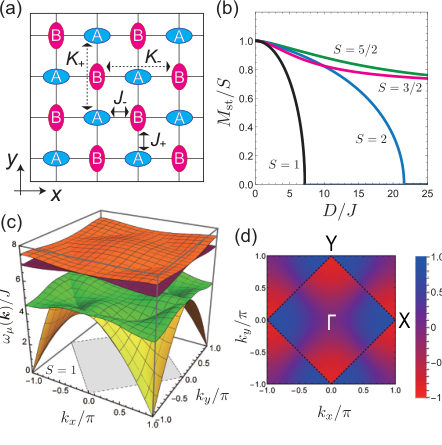
<figcaption class="paper-figure-caption"><b>Fig 1.</b> Figure 1. (a) Square lattice with two sublattices, A and B, related by a C4 rotation. In the absence of distortion, the couplings satisfy J+ = J−= J and K+ = K−= K. Lat- tice distortions introduce anisotropy as J± = J ± δJ and K± = K ± δK. (b) Staggered magnetization Mst/S as a function of D/J for S = 1, 3/2, 2, and 5/2, at K/J = 0.2 and in the absence of distortion. (c) Flavor-wave excitation spectrum ωµ(k) for S = 1 at K/J = 0.2 and D/J = 2, plotted in the extended Brillouin zone. The shaded region at the bot- tom denotes the first Brillouin zone of the two-site unit cell. (d) Momentum-resolved mx(k) of the lowest-energy (yellow) excitation in (c).</figcaption>
</figure>
<figure class="paper-figure-card">
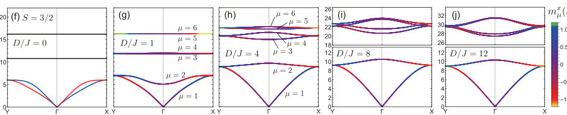
<figcaption class="paper-figure-caption"><b>Fig 2.</b> Figure 2. Evolution of the flavor-wave excitation spectra ωµ(k) with D/J at K/J = 0.2 along the Y–Γ–X path in the first Brillouin zone, for (a–e) S = 1 and (f–j) S = 3/2. The color encodes mx µ(k). In (a) and (f), the higher excitation branches at D/J = 0 are doubly degenerate within the linear flavor-wave approximation, and are shown as black lines due to the ill-defined color. In (i) and (j), the spectra are split into two panels due to the large separation between low- and high-energy branches.</figcaption>
</figure>
<figure class="paper-figure-card">

<figcaption class="paper-figure-caption"><b>Fig 3.</b> Figure 3. (a) Piezomagnetic susceptibilities χK (dashed) and χD (solid), multiplied by J, as functions of D/J at K/J = 0.2 for S = 1, 3/2, 2, and 5/2. Mode dependences (a) of gµ, (b) of fK,µ (dashed) and fD,µ (solid), and (c) of ωµ(0) as functions of D/J for different S, with the same color scheme as in (a). Thick and thin curves in (b)–(d) denote the active branches µ = 4 and 8, respectively; for all other branches, gµ = fK,µ = fD,µ = 0.</figcaption>
</figure>
<figure class="paper-figure-card">

<figcaption class="paper-figure-caption"><b>Fig 4.</b> Figure 4. Strain-induced uniform magnetization Muni as a function of the distortion parameter α, obtained from multi- component mean-field theory with δJ = αJ, δK = αK, and δD = αD. (a) S = 1 and (b) S = 3/2 for different D/J at K/J = 0.2. Dashed lines show the linear-response prediction (KχK + DχD)α.</figcaption>
</figure>
<figure class="paper-figure-card">

<figcaption class="paper-figure-caption"><b>Fig 5.</b> Figure 5. Absolute values of the nonvanishing normalized dipolar and quadrupolar matrix elements, |δSα ±,µ| and |δQαβ ±,µ|, as functions of D/J for S = 2 and K/J = 0.2. The upper and lower panels show the dipolar and quadrupolar components, respectively, for µ = 1–8. For µ = 1, only the singular components at k = 0 are indicated schematically: |δSy −,1| →∞and |δQxy +,1| →∞. The same colors represent the same components throughout, while solid (dashed) lines denote uniform (+) [staggered (−)] channels. Vertical dashed lines indicate the large-D transition, and the matrix elements are shown only in the ordered phase. The singular behavior of the µ = 2 branch as D →0 reflects the restoration of...</figcaption>
</figure>
</div>

<p><strong>Summary.</strong> This work theoretically derives the microscopic origin of piezomagnetism in higher-spin altermagnets by analyzing how lattice distortions couple to magnetic excitations. The key finding is a stark contrast between integer and half-integer spins: integer spins exhibit enhanced response due to a specific excitation mode softening into a Higgs-like amplitude mode, while this mechanism fails for half-integer systems.</p>
<p><strong>Why it may be interesting.</strong> The explicit link established between macroscopic magnetoelastic coupling (piezomagnetism) and the quantum dynamics/stability of higher-order magnetic excitations ($\mu=4n$ modes) provides a rich theoretical playground for understanding emergent properties in strongly correlated magnets, relevant to AMO systems exhibiting strong spin-orbit coupling.</p>
<details>
<summary>Detailed structure</summary>
<p><strong>Main problem.</strong> The study investigates the quantum mechanism by which lattice distortions (piezomagnetism) couple to and are mediated by higher-spin collective magnetic excitations in altermagnets.</p>
<p><strong>Main result.</strong> Integer spin systems show a pronounced enhancement of piezomagnetism due to a specific multipolar excitation mode softening into a Higgs-like amplitude mode near the large-$D$ transition, contrasting with half-integer spins where this contribution is suppressed.</p>
<p><strong>Method.</strong> The analysis employs flavor-wave theory and linear response theory applied to an effective Hamiltonian derived from mean-field decoupling of the spin system. This allows calculating susceptibilities based on excitation modes.</p>
<p><strong>Model / system.</strong> The model is a two-sublattice antiferromagnet on a square lattice with higher spin $S$, governed by an exchange, second-neighbor interaction, and easy-plane anisotropy ($D$). The Hamiltonian is perturbed by small uniaxial lattice distortions ($\delta J, \delta K, \delta D$).</p>
<p><strong>Key observables.</strong> Piezomagnetic susceptibility ($\chi_J, \chi_K, \chi_D$), uniform magnetization $\langle\hat{M}_{	ext{uni}}
angle$, and the energy/mode content of quasiparticle excitation branches ($\omega_\mu(\mathbf{k})$).</p>
<p><strong>Important parameters / regimes.</strong> Spin quantum number $S$ (integer vs. half-integer), anisotropy strength ($D$), and lattice distortion coupling constants.</p>
<p><strong>Assumptions / limitations.</strong> The analysis relies on mean-field decoupling of the Hamiltonian, followed by bosonization/flavor-wave theory to describe excitations around the ground state.</p>
<p><strong>Figures summary.</strong> Figures illustrate how susceptibilities ($\chi_K, \chi_D$) vary with anisotropy $D/J$ for different spins, highlighting peaks near the large-$D$ transition for integer spins. Other figures detail the mode dependence of coupling matrix elements.</p>
<p><strong>Paper structure.</strong> The paper systematically develops the theoretical framework by defining the Hamiltonian and using mean-field theory to establish excitation modes. It then applies linear response theory to calculate piezomagnetic susceptibilities, contrasting the behavior between integer and half-integer spin systems based on the fate of specific multipolar excitations.</p>
</details>
<details>
<summary>Abstract</summary>
<p>We investigate piezomagnetism in higher-spin altermagnets with easy-plane single-ion anisotropy using a flavor-wave approach. We show that quantum fluctuations of higher-spin collective modes provide a microscopic origin of the piezomagnetic response. For integer spins, the relevant branch softens and evolves into a Higgs-like amplitude mode on approaching the large-$D$ transition, endowing the excitation with a sizable dipolar component and producing a pronounced enhancement of piezomagnetism. By contrast, in half-integer systems the higher-spin branches are progressively separated from the low-energy dipolar sector as the anisotropy increases, which suppresses their contribution to the response. This integer-half-integer contrast directly links macroscopic piezomagnetism to the low-energy fate of multipolar excitations. Our results establish piezomagnetism as a probe of higher-spin quantum dynamics and identify higher-spin altermagnets as a promising setting for quantum magnetoelastic responses.</p>
</details>
<p><sub><a href="#top">↑ back to top</a></sub></p>

<p><a id="paper-2608.11133"></a></p>
<h3 id="sum-rules-and-density-wave-modes-in-spin-singlet-fractional-quantum-hall-fluids"><a href="http://arxiv.org/abs/2608.11133v1">Sum rules and density-wave modes in spin-singlet fractional quantum Hall fluids</a></h3>
<p><strong>Authors:</strong> Ritajit Kundu, Rakesh K. Dora, Dung Xuan Nguyen, Ajit C. Balram<br>
<strong>Type:</strong> theory · <strong>Category:</strong> strongly correlated electrons · <strong>PDF:</strong> <a href="https://arxiv.org/pdf/2608.11133v1">https://arxiv.org/pdf/2608.11133v1</a><br>
<strong>Analysis basis:</strong> full PDF text, analyzed in chunks
<strong>Topic relevance:</strong> <code>analog quantum simulation</code> <strong>2/5</strong> · <code>Frenkel-Kontorova</code> <strong>1/5</strong> · <code>Keldysh / 2PI / non-Gaussian methods</code> <strong>1/5</strong></p>
<div class="figure-strip-hint">↔ Scroll figures horizontally</div>
<div class="paper-figures-scroll">
<figure class="paper-figure-card">

<figcaption class="paper-figure-caption"><b>Fig 1.</b> FIG. 1. Fits for the density-density correlators of Laughlin states. (a) Pair-correlation function g(r) of the ν = 1/3 Laughlin state obtained from the orthogonal basis, Eq. (108), compared with Monte Carlo (MC) data on the sphere. Two fitting schemes are considered: Fit-1, imposing only the s0 = 0 constraint, and Fit-2, imposing the s0, s2, s4, and s6 constraints, Eq. (114). Inset: long-distance behavior. (b) Static structure factor S(q) corresponding to the two fits, compared with the MC data. Inset: enlarged view of the long-wavelength regime. (c) Coulomb GMP gap computed from Eq. (77). While Fit-1 fails to reproduce the correct low-q behavior, Fit-2 agrees well with the sphere results...</figcaption>
</figure>
<figure class="paper-figure-card">

<figcaption class="paper-figure-caption"><b>Fig 2.</b> FIG. 2. Spin-flip density-wave (SFDW) gaps. SFDW gaps for ν = 1, 1/3, 1/5. Solid lines are computed using Eq. (96), with the ν = 1 case given by the analytical result in Eq. (97). Markers show results obtained on the sphere using the methodology presented in Refs. [38, 93] for N = 60. For ν = 1/3 and 1/5, the statistical error bars from the Monte Carlo simulations are smaller than the markers. Dashed lines show the quadratic fit Dsq2, with Dν=1 s = √</figcaption>
</figure>
<figure class="paper-figure-card">

<figcaption class="paper-figure-caption"><b>Fig 3.</b> FIG. 3. Pair-correlation functions and static structure factors of spin-singlet FQH states. Panels (a)-(c): The various components of the pair-correlation function for the bosonic νb=2/3 Halperin-(2, 2, 1), and the fermionic ν=2/5 Halperin- (3, 3, 2) and the fermionic ν=2/3 spin-singlet Jain states, respectively. The circles show the raw Monte Carlo (MC) data obtained on the sphere, while the solid lines are planar fits to these MC data carried out using the expansions in Eqs. (108) and (109). Panels (d)-(f): The corresponding components of the static structure factor for the states shown in panels (a)-(c), respectively. The solid lines are obtained from Eqs. (111a) and (111b), while the...</figcaption>
</figure>
<figure class="paper-figure-card">

<figcaption class="paper-figure-caption"><b>Fig 4.</b> FIG. 4. Density-wave dispersions for spin-singlet FQH states. Panels (a)-(c): Dispersions of the symmetric-density- wave (SDW) and anti-symmetric-density-wave (ASDW) modes for the bosonic νb=2/3 Halperin-(2, 2, 1), and the fermionic ν=2/5 Halperin-(3, 3, 2) and the fermionic ν=2/3 spin-singlet Jain states, respectively computed using Eqs. (77) and (82) for the Coulomb interaction. We also show the corresponding gaps on the sphere. The error bar on the spherical gaps stems from the statistical uncertainty in the Monte Carlo evaluation of the structure factor. The spherical gaps are computed using methods outlined in Ref. [38]. Panels (d)-(f) present the corresponding results for the contact...</figcaption>
</figure>
<figure class="paper-figure-card">

<figcaption class="paper-figure-caption"><b>Fig 5.</b> FIG. 5. Variational phase diagrams of bilayer FQH states. Phase diagrams in the interlayer separation-polarization (d/ℓ, γ) plane for (a) bosons at filling νb=2/3, and fermions at fillings (b) ν=2/5 and (c) ν=2/3 obtained from calculations comparing the per-particle Coulomb energies of the competing candidate states listed on the panels and identifying the state with the lowest energy at each point. Solid lines denote phase boundaries. At non-zero polarizations (γ&gt;0), only the fully polarized (I) and layer-decoupled (III) states compete, whereas at γ=0 the singlet (II) state is also relevant. The hatched area shown below γ=0 highlights the phase diagram on the γ=0 line.</figcaption>
</figure>
</div>

<p><strong>Summary.</strong> This work develops a sophisticated theoretical method using Laguerre polynomials and sum rule constraints to analyze spin-singlet Fractional Quantum Hall fluids. By accurately determining the density-wave excitation gaps for both symmetric and antisymmetric modes, the authors provide crucial insights into the phase diagrams of bilayer FQH systems relevant to modern experimental platforms.</p>
<p><strong>Why it may be interesting.</strong> While focused on solid-state physics, the rigorous mathematical techniques involving orthogonal polynomial expansions and constraint enforcement (sum rules) are highly relevant to developing robust theoretical tools for strongly interacting quantum many-body systems, which share conceptual links with AMO physics modeling of few-body or lattice excitations.</p>
<details>
<summary>Detailed structure</summary>
<p><strong>Main problem.</strong> To accurately calculate long-wavelength density-wave excitation gaps for spin-singlet Fractional Quantum Hall (FQH) fluids.</p>
<p><strong>Main result.</strong> The authors show that incorporating sum rules derived from the static structure factor expansion is crucial for obtaining numerically stable and accurate values for both symmetric and antisymmetric density-wave excitation gaps.</p>
<p><strong>Method.</strong> They perform thermodynamic fits on the pair correlation function using an orthogonal basis of associated Laguerre polynomials, enforcing necessary sum rules during the fitting procedure.</p>
<p><strong>Model / system.</strong> The study focuses on two-component spin-singlet FQH fluids (Halperin and Jain states) in a strong perpendicular magnetic field. The framework is extended to analyze bilayer FQH systems.</p>
<p><strong>Key observables.</strong> Long-wavelength Girvin-MacDonald-Platzman (GMP)/symmetric density-wave excitation gap, antisymmetric density-wave mode gap, and variational energies for phase diagram construction.</p>
<p><strong>Important parameters / regimes.</strong> Filling fractions ($
u$), interlayer separation, and density imbalance/layer-polarization in bilayer systems.</p>
<p><strong>Assumptions / limitations.</strong> The analysis assumes confinement to the Lowest Landau Level (LLL) and relies on expanding correlation functions using an orthogonal polynomial basis.</p>
<p><strong>Paper structure.</strong> The paper develops a theoretical framework by fitting pair correlation functions using Laguerre polynomials, enforcing sum rules derived from the static structure factor expansion. This is applied to calculate excitation gaps and ultimately construct phase diagrams for bilayer FQH systems.</p>
</details>
<details>
<summary>Abstract</summary>
<p>Fractional quantum Hall (FQH) states are prototypical examples of strongly interacting topologically ordered systems. In this work, we obtain thermodynamic fits on the plane for the pair correlation function, and its Fourier transform, the static structure factor, of two-component spin-singlet Halperin and Jain FQH fluids by expanding them in the recently introduced basis of the orthogonal associated Laguerre polynomials [Fulsebakke et al., SciPost Phys. 14, 149 (2023), https://doi.org/10.21468/SciPostPhys.14.6.149 ] and ascertaining the expansion coefficients by fitting them to large-system Monte Carlo data evaluated using their trial wavefunctions. In this fitting procedure, aside from constraining the exact short-distance behavior of the wavefunction, we also derive and enforce the sum rules that the long-wavelength expansion of the static structure factor must adhere to. We show that incorporating these constraints is crucial for obtaining numerically stable and accurate values of the long-wavelength Girvin-MacDonald-Platzman (GMP)/symmetric density-wave excitation gap. We further extend this approach to spin-resolved density-correlation functions, enabling the evaluation of the gap of the antisymmetric density-wave mode for these spin-singlet FQH states. Finally, we use the density-correlators to compute variational energies of the states and construct phase diagrams for bilayer FQH systems. These could be relevant for understanding recent bilayer FQH experiments that map out the phase diagram by tuning the interlayer separation and density-imbalance/layer-polarization.</p>
</details>
<p><sub><a href="#top">↑ back to top</a></sub></p>

<p><a id="paper-2608.11042"></a></p>
<h3 id="entanglement-depth-and-ancilla-efficiency-in-quantum-channel-estimation"><a href="http://arxiv.org/abs/2608.11042v1">Entanglement depth and ancilla efficiency in quantum channel estimation</a></h3>
<p><strong>Authors:</strong> Javid Naikoo<br>
<strong>Type:</strong> theory · <strong>Category:</strong> quantum information and computing · <strong>PDF:</strong> <a href="https://arxiv.org/pdf/2608.11042v1">https://arxiv.org/pdf/2608.11042v1</a><br>
<strong>Analysis basis:</strong> full PDF text, analyzed in chunks
<strong>Topic relevance:</strong> <code>quantum measurements</code> <strong>2/5</strong> · <code>Keldysh / 2PI / non-Gaussian methods</code> <strong>1/5</strong></p>
<div class="figure-strip-hint">↔ Scroll figures horizontally</div>
<div class="paper-figures-scroll">
<figure class="paper-figure-card">

<figcaption class="paper-figure-caption"><b>Fig 1.</b> FIG. 1: Schematic of the optimal ancilla dimension problem. A probe state ˜σ ∈S(Hk ⊗H), prepared using a k-dimensional an- cillary system, is sent through the parameterized quantum channel Φθ. The output state (idk ⊗Φθ)(˜σ) is used to estimate the param- eter θ, with precision quantified by the SLD Fisher information Jk. The plot of Jk versus the ancilla dimension k is illustrative only and conveys the qualitative behavior of the attainable Fisher information. A main objective of this work is to characterize the smallest ancilla dimension k∗such that Jk = Jd, where d = dim H.</figcaption>
</figure>
</div>

<p><strong>Summary.</strong> This work develops a systematic theory for quantifying the role of ancillary entanglement in quantum channel estimation. It introduces the concept of 'entanglement depth' ($k^*$), which determines the minimum required ancilla dimension to reach optimal measurement precision. The results provide concrete conditions under which entanglement offers no advantage, offering deep insights into resource limitations in quantum metrology.</p>
<p><strong>Why it may be interesting.</strong> It provides a rigorous framework quantifying exactly how much entanglement resource is necessary to extract the maximum possible information about an unknown physical process (the channel).</p>
<details>
<summary>Detailed structure</summary>
<p><strong>Main problem.</strong> The paper investigates determining the minimum ancillary entanglement dimension ($k^*$) required to achieve optimal precision in quantum channel parameter estimation.</p>
<p><strong>Main result.</strong> The optimal ancilla dimension $k^*$ is characterized by the minimum rank of a state that maximizes the achievable Fisher information, and sufficient conditions are provided for when no entanglement advantage exists ($k^*=1$).</p>
<p><strong>Method.</strong> It uses variational characterization techniques to define the $k$-ancilla Fisher information, comparing it against the maximum possible value derived from optimizing over input states.</p>
<p><strong>Model / system.</strong> The model involves estimating an unknown parameter $    heta$ characterizing a quantum channel $\{\Phi_	heta\}$ acting on a system Hilbert space $H$. The estimation process utilizes ancillary entanglement via an auxiliary system $H_k$.</p>
<p><strong>Key observables.</strong> Symmetric Logarithmic Derivative (SLD) Fisher information ($J$), and the minimum required ancilla dimension ($k^*$).</p>
<p><strong>Important parameters / regimes.</strong> The channel parameter $ heta$, the input state rank $k$, and the dimensionality of the ancillary system.</p>
<p><strong>Assumptions / limitations.</strong> The analysis assumes $\{\Phi_	heta\}$ is a smooth, piecewise-regular one-parameter family of quantum channels; specific results rely on assumptions like fixed-measurement Holevo representations.</p>
<p><strong>Figures summary.</strong> Figure 1 schematically illustrates the relationship between achievable Fisher information ($J_k$) and the ancilla dimension $k$, aiming to find $k^*$ where $J_{k^*} = J_{	ext{max}}$.</p>
<p><strong>Paper structure.</strong> The paper establishes the variational formula for $J_k$, derives theorems characterizing $k^*$ based on state rank, provides sufficient conditions (zero-gap) for $k^*=1$, and illustrates these results with explicit examples like depolarizing and amplitude damping channels.</p>
</details>
<details>
<summary>Abstract</summary>
<p>We study the role of ancillary entanglement in quantum channel parameter estimation and investigate the minimal ancilla dimension required to achieve the maximum Fisher information. We introduce the $k$-ancilla Fisher information, which quantifies the optimal estimation precision achievable with input states of rank at most $k$, and derive a variational characterization in terms of a rank-constrained optimization problem. This formulation leads to a simple characterization of the minimum ancilla dimension $k^*$ required for optimal estimation, given by the minimum rank among the maximizers of the associated variational problem. We further identify sufficient conditions under which ancillary entanglement provides no advantage, including channel families admitting a fixed measure-and-prepare representation and channels satisfying a natural horizontality condition. In addition, we derive a bound on the incremental gain in Fisher information obtained by increasing the ancilla dimension under suitable structural assumptions on the optimal input states. The general results are illustrated through explicit examples, including unitary channels, qubit depolarizing and amplitude damping channels. These results provide a systematic framework for understanding and quantifying the entanglement resources required for optimal quantum channel estimation.</p>
</details>
<p><sub><a href="#top">↑ back to top</a></sub></p>

<p><a id="paper-2608.11106"></a></p>
<h3 id="the-renormalization-group-as-a-stochastic-exploration-process"><a href="http://arxiv.org/abs/2608.11106v1">The Renormalization Group as a Stochastic Exploration Process</a></h3>
<p><strong>Authors:</strong> Denis Bernard<br>
<strong>Type:</strong> theory · <strong>Category:</strong> statistical mechanics · <strong>PDF:</strong> <a href="https://arxiv.org/pdf/2608.11106v1">https://arxiv.org/pdf/2608.11106v1</a><br>
<strong>Analysis basis:</strong> full PDF text, analyzed in chunks
<strong>Topic relevance:</strong> <code>non-equilibrium universality</code> <strong>2/5</strong> · <code>driven-dissipative phase transition</code> <strong>1/5</strong></p>
<div class="figure-strip-hint">↔ Scroll figures horizontally</div>
<div class="paper-figures-scroll">
<figure class="paper-figure-card">

<figcaption class="paper-figure-caption"><b>Fig 1.</b> Low-resolution page preview, page 2</figcaption>
</figure>
<figure class="paper-figure-card">

<figcaption class="paper-figure-caption"><b>Fig 2.</b> Low-resolution page preview, page 3</figcaption>
</figure>
<figure class="paper-figure-card">

<figcaption class="paper-figure-caption"><b>Fig 3.</b> Low-resolution page preview, page 4</figcaption>
</figure>
<figure class="paper-figure-card">

<figcaption class="paper-figure-caption"><b>Fig 4.</b> Low-resolution page preview, page 5</figcaption>
</figure>
<figure class="paper-figure-card">

<figcaption class="paper-figure-caption"><b>Fig 5.</b> Low-resolution page preview, page 6</figcaption>
</figure>
</div>

<p><strong>Summary.</strong> This paper reframes the Renormalization Group (RG) as a stochastic process that tracks physical system properties across different length scales. By utilizing concepts like martingales and conditional expectations, it rigorously connects lattice statistical mechanics models to continuous mathematical structures such as Stochastic Loewner Evolution and Conformal Field Theory. This provides a powerful probabilistic framework for understanding critical phenomena.</p>
<p><strong>Why it may be interesting.</strong> The deep mathematical connection established between RG flow, martingale theory, and SLE/CFT provides powerful new tools for analyzing critical phenomena in many-body systems, which is foundational to understanding quantum phase transitions.</p>
<details>
<summary>Detailed structure</summary>
<p><strong>Main problem.</strong> The paper reinterprets the Renormalization Group (RG) as a stochastic process that explores physical phase spaces scale by scale, establishing connections to probabilistic tools and random exploration processes.</p>
<p><strong>Main result.</strong> Viewing RG flow through the lens of conditional expectation values reveals that key quantities form martingales, providing a rigorous link between concepts like Stochastic Loewner Evolution (SLE) and Conformal Field Theory (CFT).</p>
<p><strong>Method.</strong> The analysis employs techniques from probability theory, specifically using filtrations ($\mathcal{F}_T$) and martingale properties, applied to lattice statistical mechanics models.</p>
<p><strong>Model / system.</strong> The primary model is general statistical physics systems on a lattice $\Gamma$ (e.g., the Ising model), described by Boltzmann measures $P_c \propto e^{-E_D[c]}$. The continuum limit is approached via scaling limits of these discrete models.</p>
<p><strong>Key observables.</strong> Partition function ($Z_D$), conditional expectation values ($\mathbb{E}_D[O|\gamma_T]$), and the effective action ($S_p$).</p>
<p><strong>Important parameters / regimes.</strong> The scale parameter (related to interface length $T$ or lattice spacing $a$), coupling constants $\{g\}$, and the correlation length $\xi$.</p>
<p><strong>Assumptions / limitations.</strong> The analysis assumes that local interactions are sufficiently well-behaved to maintain a domain Markov property, and for continuum limits, it relies on formal constructions of scaling limits.</p>
<p><strong>Paper structure.</strong> The paper progresses by first establishing the stochastic interpretation using conditioning on interfaces (Chunk 1), then generalizing this to define RG transformations via conditional expectations (Chunk 2), and finally detailing the rigorous construction of continuum field theories through scaling limits and covariance relations (Chunks 3 &amp; 4).</p>
</details>
<details>
<summary>Abstract</summary>
<p>The Renormalization Group (RG) is a powerful and versatile framework for analyzing complex physical systems. Here, we reinterpret it as a stochastic process that explores physical phase spaces, scale by scale, progressively revealing finer details of small-scale structures. This perspective establishes a natural connection to other random exploration processes, such as the Schramm-Loewner evolution, and is more suited for a probabilist audience. It links RG concepts such as RG transformations, effective actions, etc, to usual probabilistic tools such as conditional expectation values, martingales, etc, but also makes contact with stochastic quantization.</p>
</details>
<p><sub><a href="#top">↑ back to top</a></sub></p>

<p><a id="paper-2608.11151"></a></p>
<h3 id="breaking-the-quadratic-barrier-for-von-neumann-entropy-estimation"><a href="http://arxiv.org/abs/2608.11151v1">Breaking the Quadratic Barrier for von Neumann Entropy Estimation</a></h3>
<p><strong>Authors:</strong> Minbo Gao, Qisheng Wang<br>
<strong>Type:</strong> theory · <strong>Category:</strong> quantum information and computing · <strong>PDF:</strong> <a href="https://arxiv.org/pdf/2608.11151v1">https://arxiv.org/pdf/2608.11151v1</a><br>
<strong>Analysis basis:</strong> full PDF text, analyzed in chunks
<strong>Topic relevance:</strong> <code>quantum measurements</code> <strong>2/5</strong></p>
<div class="figure-strip-hint">↔ Scroll figures horizontally</div>
<div class="paper-figures-scroll">
<figure class="paper-figure-card">

<figcaption class="paper-figure-caption"><b>Fig 1.</b> Low-resolution page preview, page 2</figcaption>
</figure>
<figure class="paper-figure-card">

<figcaption class="paper-figure-caption"><b>Fig 2.</b> Low-resolution page preview, page 3</figcaption>
</figure>
<figure class="paper-figure-card">

<figcaption class="paper-figure-caption"><b>Fig 3.</b> Low-resolution page preview, page 4</figcaption>
</figure>
<figure class="paper-figure-card">

<figcaption class="paper-figure-caption"><b>Fig 4.</b> Low-resolution page preview, page 5</figcaption>
</figure>
<figure class="paper-figure-card">

<figcaption class="paper-figure-caption"><b>Fig 5.</b> Low-resolution page preview, page 6</figcaption>
</figure>
</div>

<p><strong>Summary.</strong> This paper presents a breakthrough estimator for calculating the von Neumann entropy of an unknown quantum state. By introducing a novel spectral decomposition and combining specialized estimators for different eigenvalue regimes, the authors achieve a sample complexity that scales subquadratically with system dimension $d$. This result significantly improves resource efficiency compared to previous methods in quantum information theory.</p>
<p><strong>Why it may be interesting.</strong> This work provides fundamental algorithmic improvements in quantum information theory by establishing tighter resource bounds for estimating core quantities like entropy from limited measurements, which is crucial for experimental quantum characterization.</p>
<details>
<summary>Detailed structure</summary>
<p><strong>Main problem.</strong> The primary goal is to estimate the von Neumann entropy $S(
ho)$ of an unknown quantum state $
ho$ given limited sampling data.</p>
<p><strong>Main result.</strong> The authors derive a novel estimator achieving a sample complexity that scales subquadratically, $o(d^2)$, breaking previous quadratic barriers for this estimation task.</p>
<p><strong>Method.</strong> The technique involves decomposing the state's spectrum using an eigenvalue threshold and employing separate estimators—a bias-corrected plug-in method for large eigenvalues and a polynomial moment estimator for small ones.</p>
<p><strong>Model / system.</strong> The system is an unknown quantum state $
ho$ defined on a $d$-dimensional Hilbert space, treated as a density operator. The analysis heavily relies on functional analysis tools like Schatten norms and spectral decomposition.</p>
<p><strong>Key observables.</strong> Von Neumann entropy $S(
ho) = -	ext{tr}(
ho \log(
ho))$, and the estimation error $\epsilon$.</p>
<p><strong>Important parameters / regimes.</strong> The dimension of the Hilbert space ($d$), the desired additive error ($\varepsilon$), and the eigenvalue threshold ($B$).</p>
<p><strong>Assumptions / limitations.</strong> Success relies on 'successful tomography' to bound measurement errors, and the overall analysis combines bounds from entropy loss (via a new pinching inequality) and moment estimation.</p>
<p><strong>Paper structure.</strong> The paper builds by first establishing the problem context and reviewing prior complexity results. It then details the core methodology: splitting the state into high- and low-eigenvalue components, developing separate estimators for each part (using moment estimation for the low end), and finally combining these estimates using a new pinching inequality to achieve the overall subquadratic sample bound.</p>
</details>
<details>
<summary>Abstract</summary>
<p>We study the sample complexity of estimating the von Neumann entropy of an unknown $d$-dimensional quantum state. All previously known estimators require $Ω(d^2)$ samples, and plug-in estimators are known to face a quadratic barrier. We give the first subquadratic-sample estimator: for additive error $\varepsilon$, our estimator uses   \[   O\!\left(\frac{d^2 \log^2(\log(d)) \log(1/\varepsilon)}{\varepsilon^2 \log^2(d)} + \frac{\log^2(d/\varepsilon)}{\varepsilon^2}\right)   \] samples. In particular, for constant $\varepsilon$, the complexity is $O_\varepsilon(d^2\log^2(\log(d))/\log^2(d))=o(d^2)$. Our analysis introduces a new pinching inequality that bounds the entropy loss under a space direct-sum decomposition, together with a bias-corrected estimator for large eigenvalues and a new bounded-coefficient polynomial estimator for small eigenvalues.</p>
</details>
<p><sub><a href="#top">↑ back to top</a></sub></p>

<p><a id="paper-2608.10674"></a></p>
<h3 id="optimal-fidelity-estimation-when-one-state-is-pure-via-algorithmic-uhlmann-transform"><a href="http://arxiv.org/abs/2608.10674v1">Optimal fidelity estimation when one state is pure via algorithmic Uhlmann transform</a></h3>
<p><strong>Authors:</strong> Yupan Liu, Qisheng Wang<br>
<strong>Type:</strong> theory · <strong>Category:</strong> quantum information and computing · <strong>PDF:</strong> <a href="https://arxiv.org/pdf/2608.10674v1">https://arxiv.org/pdf/2608.10674v1</a><br>
<strong>Analysis basis:</strong> full PDF text, analyzed in chunks
<strong>Topic relevance:</strong> <code>quantum measurements</code> <strong>2/5</strong></p>
<div class="figure-strip-hint">↔ Scroll figures horizontally</div>
<div class="paper-figures-scroll">
<figure class="paper-figure-card">

<figcaption class="paper-figure-caption"><b>Fig 1.</b> Figure 1: Uhlmann cross operator X and the zero block of its unitary dilation W.</figcaption>
</figure>
<figure class="paper-figure-card">

<figcaption class="paper-figure-caption"><b>Fig 2.</b> Figure 2: Quantum circuit U1.</figcaption>
</figure>
<figure class="paper-figure-card">

<figcaption class="paper-figure-caption"><b>Fig 3.</b> Figure 3: Quantum circuit U0.</figcaption>
</figure>
</div>

<p><strong>Summary.</strong> This paper presents an optimal quantum estimator for calculating the Uhlmann fidelity between two quantum states when one of them is known to be pure. By adapting the algorithmic Uhlmann transform, the authors achieve query-optimal complexity $O(1/\varepsilon)$, providing a significant theoretical improvement over general mixed-state estimation protocols.</p>
<p><strong>Why it may be interesting.</strong> This work provides quantum computational tools to estimate fundamental physical quantities like state overlap with high efficiency, which is crucial for characterizing quantum channels or verifying quantum process fidelity.</p>
<details>
<summary>Detailed structure</summary>
<p><strong>Main problem.</strong> The primary goal is to develop an optimal quantum estimator for the Uhlmann fidelity $F(
ho_0, 
ho_1)$ when only the promise that at least one of the two input states ($
ho_0$ or $
ho_1$) is pure is available.</p>
<p><strong>Main result.</strong> The authors establish a query-optimal quantum estimator achieving complexity $\Theta(1/\varepsilon)$, which significantly improves upon previous bounds in this specific scenario.</p>
<p><strong>Method.</strong> The method involves specializing the refined algorithmic Uhlmann transform to utilize the structure imposed by one pure state, relating the fidelity estimation to estimating maximum square-root amplitudes derived from the unitary dilation of the Uhlmann cross operator.</p>
<p><strong>Model / system.</strong> The system involves two unknown quantum states, $
ho_0$ and $
ho_1$, whose closeness is quantified by the Uhlmann fidelity. The analysis focuses on accessing these states via state-preparation circuits or receiving multiple copies.</p>
<p><strong>Key observables.</strong> Uhlmann fidelity $F(
ho_0, 
ho_1)$, which equals the norm of the Uhlmann cross operator $\lVert X 
Vert$ when one state is pure.</p>
<p><strong>Important parameters / regimes.</strong> The estimation precision $\varepsilon$, and the query/sample complexities (e.g., $O(1/\varepsilon)$ queries).</p>
<p><strong>Assumptions / limitations.</strong> The core assumption is that at least one of the two states ($
ho_0$ or $
ho_1$) is pure, which simplifies the structure of the Uhlmann cross operator.</p>
<p><strong>Figures summary.</strong> Figure 1 illustrates the Uhlmann cross operator $X$ and its unitary dilation block. Other figures detail quantum circuits used to estimate related quantities $a_0$ and $a_1$.</p>
<p><strong>Paper structure.</strong> The paper builds upon existing fidelity estimation techniques, deriving an estimator by specializing the algorithmic Uhlmann transform for the one-pure-state case, culminating in a concrete algorithm (Algorithm 1) for optimal estimation.</p>
</details>
<details>
<summary>Abstract</summary>
<p>The Uhlmann fidelity ${\rm F}(ρ_0,ρ_1) = {\rm tr}|\sqrt{ρ_0}\sqrt{ρ_1}|$ is one of the most fundamental quantities in quantum information theory for quantifying the closeness between two quantum states. Estimating the Uhlmann fidelity to within additive error $\varepsilon$ requires a number of copies of the states, or queries to their state-preparation circuits, that depends at least linearly on the smaller of the ranks of $ρ_0$ and $ρ_1$. Consequently, this rank dependence disappears when either state is pure, in which case the query and sample complexities depend only polynomially on $1/\varepsilon$. However, the known optimal estimator for ${\rm F}(ρ,|ψ\rangle\!\langleψ|)$ due to Fang and Wang (ESA 2025) requires prior knowledge of which state is pure.   In this work, we remove this mathematically unnecessary prior-knowledge requirement and establish an optimal estimator for ${\rm F}(ρ, |ψ\rangle\!\langleψ|)$ under the sole promise that one of the two states is pure, without knowing which one. Our estimator is obtained by specializing the refined algorithmic Uhlmann transform of Utsumi, Nakata, Wang, and Takagi (2025) to the case where one state is pure. In this setting, the Uhlmann fidelity can be recovered as follows: apply a unitary dilation of ${\rm tr}_{\sf A}(|ψ_0\rangle\!\langleψ_1|)$ (or its inverse) to the reference register $\sf R$ of the purification $|ψ_1\rangle$ (or $|ψ_0\rangle$) on the registers $\sf A$ and $\sf R$, estimate the corresponding square-root amplitude in each case, and take the maximum of the resulting two estimates.</p>
</details>
<p><sub><a href="#top">↑ back to top</a></sub></p>
<hr>
<p>
<a href="index.html">← Index</a>
 · <a href="papers_02.html">← Previous</a> · <a href="papers_04.html">Next →</a>
</p>
<hr>

</body>
</html>
